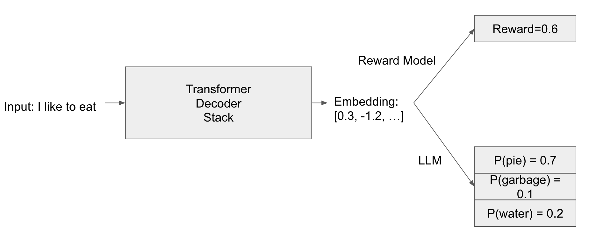
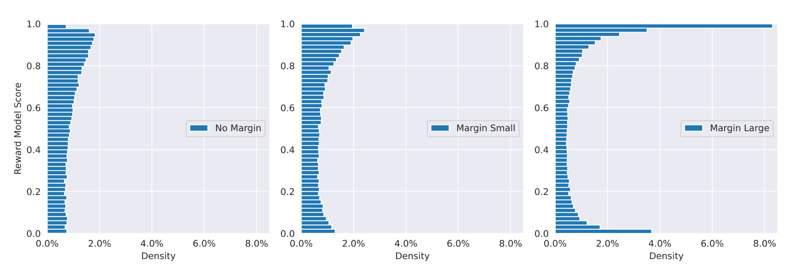
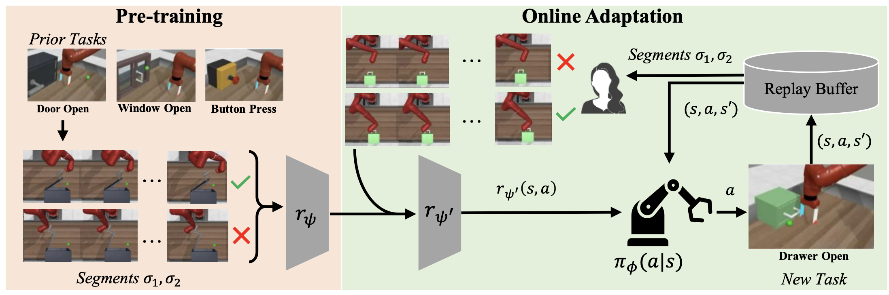
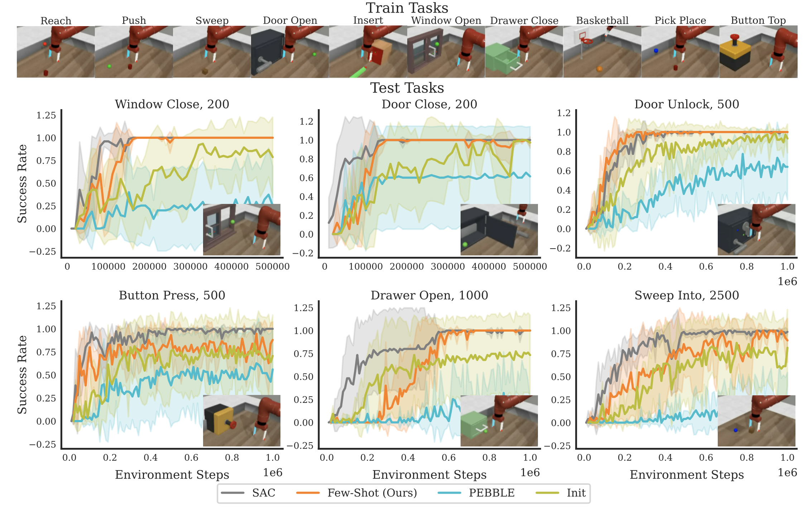
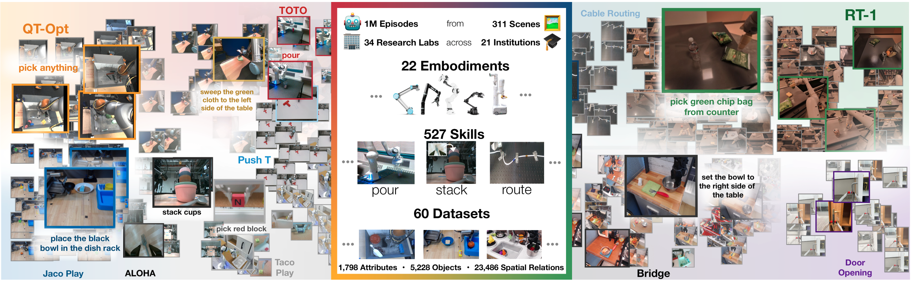
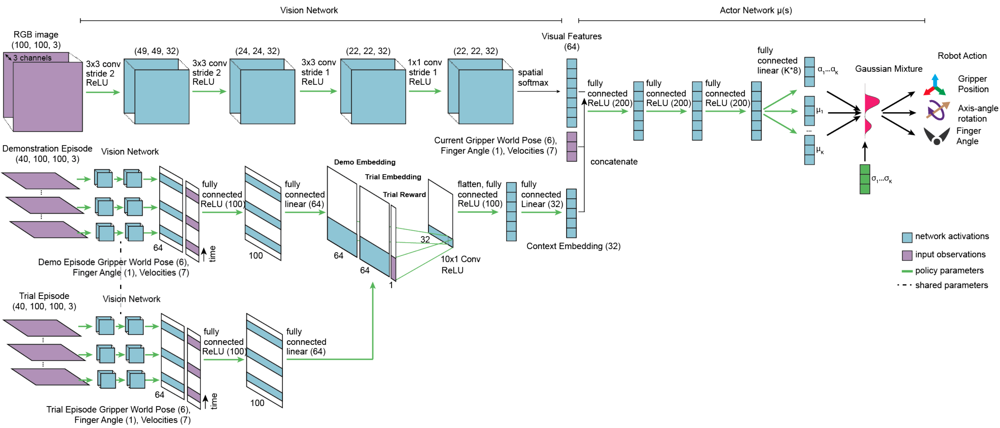
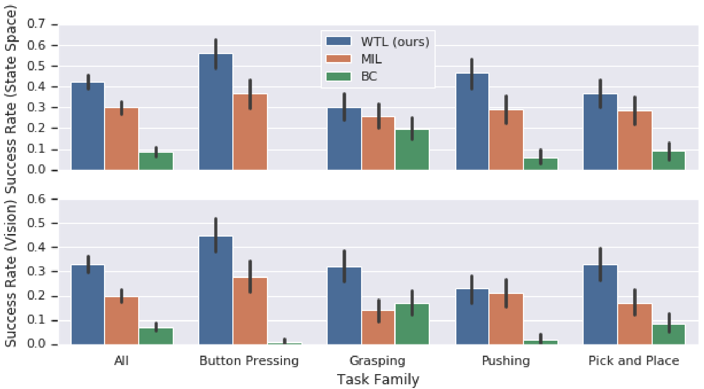
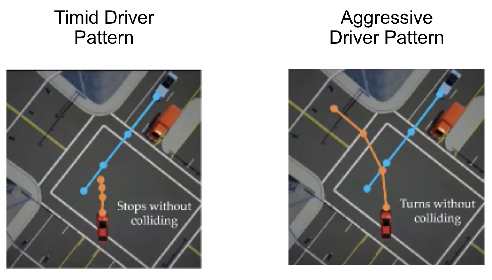

from sklearn.model_selection import train_test_split
import torch
class LogisticRegression:
def __init__(self):
self.weights = None # Initialized during training
def train(self, X, y, learning_rate, num_iterations):
"""
Train the logistic regression model using gradient descent (no bias).
Each gradient update should be with respect to the entire dataset X.
Parameters:
- X (torch.Tensor): Training data of shape (n_samples, n_features).
- y (torch.Tensor): Target labels of shape (n_samples,).
"""
n_samples, n_features = X.shape
# Initialize weights without the bias term
self.weights = torch.zeros(n_features)
for i in range(num_iterations):
# YOUR CODE HERE (~4-5 lines)
pass
# END OF YOUR CODE
def predict_probs(self, X):
"""
Predict probabilities for samples in X (no bias).
Parameters:
- X (torch.Tensor): Input data of shape (n_samples, n_features).
Returns:
- y_probs (torch.Tensor): Predicted probabilities.
"""
y_probs = None
# YOUR CODE HERE (~2-3 lines)
pass
# END OF YOUR CODE
return y_probs
if __name__ == "__main__":
# %%
# Load in Llama3 embeddings of prompt + completions on RewardBench
chosen_embeddings = torch.load('data/chosen_embeddings.pt')
rejected_embeddings = torch.load('data/rejected_embeddings.pt')
# Subtract the embeddings according to the Bradley-Terry reward model setup presented in the problem
X = (chosen_embeddings - rejected_embeddings).to(torch.float)
y = torch.ones(X.shape[0])
# Split dataset 80/20 into training and validation sets
X_train, X_val, y_train, y_val = train_test_split(X, y, test_size=0.2, random_state=42)
print("Training set size:", X_train.shape)
print("Validation set size:", X_val.shape)
model = LogisticRegression()
# Tune the learning_rate and num_iterations until you achieve expected validation accuracy of at least 90%
learning_rate = None
num_iterations = None
model.train(X_train, y_train, learning_rate=learning_rate, num_iterations=num_iterations)
y_train_probs = model.predict_probs(X_train)
print(f"Expected Train Accuracy: {y_train_probs.mean()}")
y_val_probs = model.predict_probs(X_val)
print(f"Expected Validation Accuracy: {y_val_probs.mean()}") # Should reach at least 90%2 Models of Preferences and Decisions
Fullscreen Part 1 Fullscreen Part 2
2.1 Introduction
Human preference modeling aims to capture humans’ decision making processes in a probabilistic framework. Many problems would benefit from a quantitative perspective, enabling an understanding of how humans engage with the world. In this chapter, we will explore how one can model human preferences, including different formulations of such models, how one can optimize these models given data, and considerations one should understand to create such systems. We describe these assumptions in Section 2.2.
2.2 Foundations of Preference Models
Axiom 1: Construction of Choices Set
Human preference models model the preferred choices amongst a set of options. For example, this could be modeling which meal from a set of options a person will most likely choose. Preference models must enumerate the set of all possible choices included in a human decision. As such, we must ensure that the choices we enumerate capture the entire domain (collectively exhaustive) but are distinct (mutually exclusive) choices. A discrete set of choices is a constraint we canonically impose to ensure we can tractably model preferences and aptly estimate the parameters of preference models. We assume that if a new option is added to the choice set, the relative probabilities of choosing between the original options remain unchanged. This is known as Independence of Irrelevant Alternatives (IIA) property from Luce’s axiom of choices (Luce 1977).
Axiom 2: Preference Centers around Utility
Human preference models are centered around the notion of utility, a scalar quantity representing the benefit or value an individual attains from selecting a given choice. We assume that the underlying utility mechanism of a human preference model captures the final decision output from a human. We use the notation \(u_{i,j}\) as the utility of person \(i\) choosing item \(j\). The utility is a random variable, decomposing into true utility \(u_{i,j}^*\) and a random noise \(\epsilon_{i,j}\): \(u_{i,j} = u_{i,j}^* + \epsilon_{i,j}\). Only the relative difference in utility matters to predict the choice among options. As such, the scale of the utilities is irrelevant within a given set of human preference data. The scale of utilities is important when comparing across datasets or across different humans; since utility may be defined differently in various datasets or different human. A common practice to address this consideration is to standardize the utilities in each dataset based on its variance in the observed data.
Axiom 3: Rationality
Modeling decision-making must also take into account rationality. Rationality assumption provides a framework for predicting and modeling human behavior by outlining the principles that guide decision-making processes (Keisler and Lee 2003). By incorporating different types of rationality, researchers can create more accurate and realistic models that reflect the complexities of human decision-making (Miljkovic 2005; Simon 1972). Perfect rationality posits that individuals make decisions that maximize their utility, assuming they have complete information and the cognitive ability to process this information to make optimal choices (Miljkovic 2005). Numerous studies have shown that this assumption frequently fails to describe actual human behavior, as individuals do not always act in ways that maximize their utility due to various constraints and biases (Miljkovic 2005). Bounded rationality acknowledges that individuals operate within the limits of their information and cognitive capabilities. Decisions are made using heuristics rather than through exhaustive analysis, reflecting the practical constraints of real-world decision-making (Simon 1972). Bounded rationality acknowledges that decisions are influenced by noise, resulting in probabilistic choice behavior: while individuals aim to maximize their utility, random factors can lead to deviations from perfectly rational choices (Miljkovic 2005).
Bounded rationality can be operationalized through Boltzmann rationalit. It addresses the likelihood of a human selecting an option \(o\) from a set \(O\). Desirability is represented by a value function \(v : O \rightarrow \mathbb{R}^+\), with the selection probability calculated as \(P(o) = \frac{v(o)}{\sum_{o' \in O} v(o')}\). Assuming there is an underlying reward for each option \(R(o) \in \mathbb{R}\) such that \(v(o) = e^{R(o)}\), we get \(P(o) = \frac{e^{R(o)}}{\sum_{\bar{o} \in \mathcal{O}} e^{R(\bar{o})}}\). Essentially, “A human will act out a trajectory with a probability proportional to the exponentiated return they receive for the trajectory.” When choices involve trajectories \(\xi \in \Xi\) (sequences of actions), the reward \(R\) is typically a function of a feature vector \(\phi : \Xi \rightarrow \mathbb{R}^k\), and the probability density is given by \(p(\xi) = \frac{e^{R(\phi(\xi))}}{\int_{\Xi} e^{R(\phi(\bar{\xi}))} d\bar{\xi}}\).
Boltzmann rationality has the “duplicates problem,” where there is no concept of similar actions (e.g., choosing between using a car or a train for transportation, with no particular preference). The probability of making the decision is 50% for either option. However, if we now have 100 cars, under Boltzmann, we would have a 99% probability of choosing a car, which is unrealistic. To address this issue, various extensions have been proposed. One such extension is the attribute rule, which interprets options as bundles of attributes. In this rule, attributes \(X\) are associated with options, and they have desirability values \(w(x)\). An attribute intensity function \(s(x, o)\) indicates the degree to which an attribute is expressed in an option. The probability of choosing option \(o\) is
\[P(o) = \sum_{x \in \mathcal{X}_o} \frac{w(x)}{\sum_{\bar{x} \in \mathcal{X}_o} w(\bar{x})} \cdot \frac{s(x, o)}{\sum_{\tilde{o} \in \mathcal{O}} s(x, \bar{o})}\]
This equation describes a two-step process where an attribute \(x \in X_O\) is first chosen according to a Boltzmann-like rule and then an option \(o \in O\) with that attribute is selected using another Boltzmann-like rule. This approach handles duplicates gracefully by effectively creating a two-layer hierarchy in choosing an option. Boltzmann rationality finds practical applications in various fields, particularly in reinforcement learning, where it models decision-making in uncertain environments. It also applies to trajectory selection, where the probability of a sequence of actions (trajectory) is proportional to the exponential return. These applications enhance the accuracy of models that interact with or predict human behavior, making Boltzmann Rationality a vital component of the models of interaction.
We next explore a case study to deepen our understanding of rationality: Limiting Errors due to Similar Selection (LESS) (Bobu et al. 2020). LESS takes inspiration from the attribute rule and extends it to continuous trajectories (Bobu et al. 2020). The key insight is that instead of creating “attributes”, which group together similar discrete options, it introduces a similarity metric on the space of continuous actions, thereby creating similar groupings on trajectories. The LESS similarity metric could be defined in trajectory space, where the trajectory is some theoretical notion of all states and actions one passes through over time. However, it is instead defined on the measured feature vector \(\phi(\xi)\) associated with the agent’s trajectory \(\xi\). In practice, one can never measure the exact trajectory with perfect fidelity. The feature vector will almost necessarily map in a one-to-many fashion with trajectories. Formally, let \(\phi \in \Phi\) be the set of all possible feature vectors \(\xi \in \Xi\) the set of all trajectories. The set of feature vectors belonging to a set of trajectories \(\Xi' \subseteq \Xi\) is \(\Phi_{\Xi'}\). We begin with equation (4) and substitute our similarity metric on feature vectors of trajectories.
\[\begin{aligned} P(\xi) = \frac{e^{R(\phi(\xi))}}{\sum_{\bar{\phi} \in \Phi_{\Xi}} e^{R(\hat{\phi})}} \cdot \frac{s(\phi(\xi), \bar{\xi})}{\sum_{\hat{\xi} \in \Xi} s(\phi(\xi), \bar{\xi})} \end{aligned}\]
The probability of choosing trajectory \(\xi\) is proportional to the exponentiated reward for the agent’s measured trajectory \(\phi(\xi)\), normalized by the sum of all rewards over all possible measured trajectories. The second half of the product is a normalization factor based on how similar the current trajectory is to other trajectories in feature space. We can define the similarity function as an indicator function, where \(s(x, \xi) = 1\) only if \(x = \phi(\xi)\). That means that multiple trajectories with the same feature vector will effectively be considered a single option. Thus, we achieve the “bundling” of trajectories, in the same way that the attribute rule bundled options under different attributes.
However, setting the similarity metric as an indicator function isn’t sufficiently flexible. We want a proper metric that acts more as a continuous distance over the feature space. We instead define \(s\) to be a soft similarity metric \(s : \Phi \times \Xi \rightarrow \mathbb{R}^+\) with the following properties:
\(s(\phi(\xi), \xi) = \max_{x \in \phi, \bar{\xi} \in \Xi} s(x, \hat{\xi}) \forall (\xi \in \Xi)\)
Symmetric: \(s(\phi(\xi), \bar{\xi}) = s(\phi(\bar{\xi}), \xi)\)
Positive Semidefinite: \(s(x, \xi) \geq 0\)
Using this redefined similarity metric \(s\), we extend (5) to be a probability density on the continuous trajectory space \(\mathcal{E}\), as in (3).
\[p(\hat{\xi}) = \frac{\frac{e^{R(\phi(\xi))}}{\int_{\Xi} s(\phi(\xi), \bar{\xi}) d\bar{\xi}}}{\int_{\Xi}\frac{e^{R(\phi(\hat{\xi}))}}{\int_{\Xi} s(\phi(\hat{\xi}), \bar{\xi}) d\bar{\xi}}d\hat{\xi}} \propto \frac{e^{R(\phi(\hat{\xi}))}}{\int_{\Xi} s(\phi(\xi), \bar{\xi}) d\bar{\xi}}\]
Under this formulation, the likelihood of selecting a trajectory is inversely proportional to its feature-space similarity with other trajectories. This de-weights similar trajectories, which is the desired effect for our LESS model of human decision-making. This means, though, that the “trajectory bundle” of similar trajectories still has a reasonable probability of being chosen.
Axiom 4: Preference captures decision-making
Human preferences are classified into two categories: revealed preferences and stated preferences.
Revealed preferences are those one can observe retroactively from existing data. The implicit decision-making knowledge can be captured via learnable parameters and their usage in models which represent relationships between input decision attributes that may have little human interpretability, but enable powerful models of human preference. For health coaching, we may have information about which foods an individual has chosen previously in different contexts, allowing us to build a model from their decisions. Such data may be easier to acquire and can reflect real-world outcomes (since they are, at least theoretically, inherently based on human preferences). However, if we fail to capture sufficient context in such data, human preference models may not sufficiently capture human preferences.
Stated preferences are those individuals explicitly indicate in potentially experimental conditions. The explicit knowledge may be leveraged by including inductive biases during modeling (for example, the context used in a model) which are reasonable assumptions for how a human would consider a set of options.This may include controlled experiments or studies. This may be harder to obtain and somewhat biased, as they can be hypothetical or only accurately reflect a piece of the overall context of a decision. However, they enable greater control of the decision-making process.
2.3 Methods for Collecting Preference Data
Next, we explore various mechanisms by which humans can express their preferences, including pairwise sampling, rank-order sampling, rating-scale sampling, best-worst scaling, and multiple-choice samples. In pairwise sampling, participants compare two options to determine which is preferred. One of the major advantage of this method is low cognitive demand for rater. Its disavantage is the limited amount of information content elicited by a sample. Next, we will see that we can trading cognitive demand for rater to elicit more nuance preference information. For example, Rank-order sampling captures human preferences by having participants rank items from most to least preferred. Used in voting, market research, and psychology, it provides rich preference data but is more complex and cognitively demanding than pairwise comparisons, especially for large item sets. Participants may also rank inconsistently (Ragain and Ugander 2019).
Rating-scale sampling, such as the Likert scale, is a method in which participants rate items on a fixed-point scale (e.g., 1 to 5, “Strongly Disagree” to “Strongly Agree”) to measure levels of preference towards items (Harpe 2015). Participants can also mark a point on a continuous rating scale to indicate their preference or attitude. Commonly used in surveys, product reviews, and psychological assessments, this method provides a more nuanced measure than discrete scales. Rating-scale sampling is simple for participants to understand and use, provides rich data on the intensity of preferences, and is flexible enough for various measurements (e.g., agreement, satisfaction) (Harpe 2015). However, rating-scale sampling methods also have limitations. Ratings can be influenced by personal biases and interpretations of scales, leading to subjectivity. There is a central tendency bias, where participants may avoid extreme ratings, resulting in clustering responses around the middle. Different participants might interpret scale points differently, and fixed-point scales may not capture the full nuance of participants’ preferences or attitudes (Harpe 2015).
In Best-worst scaling (BWS), participants are presented with items and asked to identify the most and least preferred options. The primary objective of BWS is to discern the relative importance or preference of items, making it widely applicable in various fields such as market research, health economics, and social sciences (Campbell and Erdem 2015). BWS provides rich data on the relative importance of items, helps clarify preferences, reduces biases found in traditional rating scales, and results in utility scores that are easy to interpret. However, BWS also has limitations, including potential scale interpretation differences among participants, and design challenges to avoid biases, such as the order effect or the context in which items are presented.
Multiple-choice sampling involve participants selecting one option from a set of alternatives. Multiple-choice sampling is simple for participants to understand and reflect on realistic decision-making scenarios where individuals choose one option from many. It is beneficial in complex choice scenarios, such as modes of transportation, where choices are not independent (Bolt and Wollack 2009). Multiple-choice sampling often relies on simplistic assumptions such as the independence of irrelevant alternatives (IIA), which may not always hold true. This method may also fail to capture the variation in preferences among different individuals, as it typically records only the most preferred choice without accounting for the relative importance of other options.
2.4 Models of Choices
Binary Choice Model
Binary choice model is centered around one item. The model predicts, for that option, after observing user choices in the past, whether that option will be chosen or not. We use binary variable \(y \in \{0, 1\}\) to represent whether that choice will be picked by the user in the next phase of selection. We denote \(P = \mathbb{P}(y = 1)\). We can formally model \(y\) as a function of the utility of the positive choice: \(y = \mathbb{I}[U>0]\). We explore two cases based on the noise distribution. \(\psi\) is the logistic function or the standard normal cummulative distribution function if noise follows logistic distribution and the standard normal distribution, repsectively: \[ \mathbb{P}(u_{i,j} > 0) = \mathbb{P}(u_{i,j}^* + \epsilon > 0) = 1 - \mathbb{P}( \epsilon < -u_{i,j}^*) = \psi(u_{i,j}^*). \]
Bradley-Terry Model
The Bradley-Terry model compares the utility of choice over all others (Bradley and Terry 1952b) in the set of \(J\) choices \(i \in \{1, 2, \dots, J\}\). Each choice can also have its unique random noise variable representing the unobserved factor, although we can also choose to have all choices’ unobserved factors follow the same distribution (e.g. independent and identically distributed, IID). The noise is represented as an extreme value distribution, although we can choose alternatives such as a multivariate Gaussian distribution: \(\epsilon \sim \mathcal{N}(0, \Sigma)\). If \(\Sigma\) is not a diagonal matrix, we effectively model correlations in the noise across choices, enabling us to avoid the IID assumption. In the case of the extreme value distribution, we model the probability of a user preferring choice \(i\), which we denote as \(P_i = Z^{-1}\exp(u_{i,j}^*)\) where \(Z = \sum_{j = 1}^{J} \exp(u_{i,j}^*)\).
Ordered Preferences Model
Previous models do not leverage information about ordering of the available options a human can choose from: all choices were treated as independent by the model. The model aims to capture how an individual chooses between them. However, in many cases, we may introduce an inductive bias based on information about the options. For example, in a study for stated preferences, a user may be able to choose from intricately dependent options such as very poor, poor, fair, good, and great. In this case, it can be useful to include this bias in our model to represent a human’s decision-making process better. Instead of comparing choices against alternatives, we can focus on a single example and use additional parameters to define classification criteria based on the utility determined by the model. Let us suppose we have a single example with attributes \(z_i\), and wish to know which of \(J\) predefined options an individual will choose from. We can define \(J - 1\) parameters, which act as thresholds on the utility computed by \(u_i = u_{i,j}^*\) to classify the predicted choice between these options. For example, if there are 3 predefined options, we can define parameters \(a, b \in \mathbb{R}\) such that
\[ y_i = \begin{cases} 1 & u < a \\ 2 & a \le u < b \\ 3 & \text{else} \end{cases} \]
By assuming the noise distribution to be either logistic or standard normal, we have \[ \begin{split} \mathbb{P}(y_i = 1) & = \mathbb{P}(u < a) = \mathbb{P}(u_{i,j}^* + \epsilon < a) = \psi(a-u_{i,j}^*) \\ \mathbb{P}(y_i = 2) & = \mathbb{P}(a \le u < b) = \mathbb{P}(a - u_{i,j}^* \le \epsilon < b - u_{i,j}^*) = \psi(b-u_{i,j}^*) - \psi(u_{i,j}^*-a) \\ \mathbb{P}(y_i = 3) & = \mathbb{P}(u > b) = \mathbb{P}(u_{i,j}^* + \epsilon > b ) = \mathbb{P}( \epsilon > b - u_{i,j}^*) = \psi(b-u_{i,j}^*) \end{split} \]
Plackett-Luce Model
We can model an open-ended ranking of the available options with the Plackett-Luce model, in which we jointly model the full sequence of choice ordering (Plackett 1975). The general form models the joint distribution as the product of conditional probabilities, where each is conditioned on the preceding ranking terms. Given an ordering of \(J\) choices \(\{y_1, \dots, y_J\}\), we factorize the joint probability into conditionals. Each conditional follows the Bradley-Terry model: \[ \mathbb{P}(y_1, \dots, y_J) = \mathbb{P}(y_1) \cdot \mathbb{P}(y_2 | y_1) \cdot \dots \cdot \mathbb{P}(y_J | y_1, y_2, \dots y_{J - 1}) = \prod_{i = 1}^J \frac{\exp(u_{i,j}^*)}{\sum_{j \ge i} \exp(u_{i,j}^*)} \]
Ideal Point Model
The ideal point model uses distance functions to compute utility for individual-choice pairs (Huber 1976). Given vector representation \(z_i\) of choice \(i\) and a vector \(v_n\) representing an individual \(n\), we can use a distance function to model a stochastic utility function with the unobserved factors following a specified distribution: \(u_{n, i} = \texttt{dist}(z_i, v_n) + \epsilon_{n, i}\). We assume human preferences follow the choice with maximum utility: \(y_{n, i} = \mathbb{I}[u_{n, i} > u_{n, j} \ \forall i \ne j]\). The intuition is that vectors exist in a shared \(n\)-dimensional space, and as such we can use geometry to match choices whose representations are closest to that of a given individual. This model can often result in faster learning compared to non-geometric approaches (Jamieson and Nowak 2011; Tatli, Nowak, and Vinayak 2022) when equipped with a distance metric. Certain distance metrics, such as Euclidian distance or inner product, can easily be biased by the scale of vectors. A distance measure such as cosine similarity, which compensates for scale by normalizing the inner product of two vectors by the product of their magnitudes, can mitigate this bias yet may discard valuable information encoded by the length of the vectors. Beyond the distance metric alone, this model places a strong inductive bias that the individual and choice representations all share a common embedding space. In some contexts, this can be a robust bias to add to the model (Greiner 2005), but it is a key factor one must take into account before employing such a model, and is a key design choice for modeling.
2.5 Choices Aggregation
Game theory provides a mathematical framework for analyzing strategic interactions among rational agents. These models help in understanding and predicting human behavior by considering multiple criteria and the associated trade-offs. They enhance the understanding of preferences across multiple criteria and allow for richer and more accurate feedback through structured comparisons. Game-theory framings capture the complexity of preferences and interactions in decision-making processes (Bhatia et al. 2020).
The most popular form of preference elicitation involves pairwise comparisons. Users are asked to choose between two options, such as product A or product B. This method is used in various applications like search engines, recommender systems, and interactive robotics. Key concepts include the Von Neumann Winner and the Blackwell Winner. The Von Neumann Winner refers to a distribution over objects that beats or ties every other object in the collection under the expected utility assumption. The Blackwell Winner generalizes the Von Neumann Winner for multi-criteria problems using a target set for acceptable payoff vectors (Bhatia et al. 2020).
Game-theory framings provide a framework for preference learning along multiple criteria. These models use tools from vector-valued payoffs in game theory, with Blackwell’s approach being a key concept. This approach allows for a more comprehensive understanding of preferences by considering multiple criteria simultaneously (Bhatia et al. 2020).
In game-theory framings, pairwise preferences are modeled as random variables. Comparisons between objects along different criteria are captured in a preference tensor \(P\). This tensor models the probability that one object is preferred over another along a specific criterion, allowing for a detailed understanding of preferences across multiple dimensions (Bhatia et al. 2020).
The preference tensor \(P\) captures object comparisons along different criteria. It is defined as: \[P(i_1, i_2; j) = P(i_1 \succ i_2 \text{ along criterion } j)\] where \(P(i_2, i_1; j) = 1 - P(i_1, i_2; j)\). These values are aggregated to form an overall preference matrix \(P_{ov}\) (Bhatia et al. 2020).
The Blackwell Winner is defined using a target set \(S\) of acceptable score vectors. The goal is to find a distribution \(\pi^*\) such that \(P(\pi^*, \pi) \in S\) for all \(\pi\). This method minimizes the maximum distance to the target set, providing a robust solution to multi-criteria preference problems (Bhatia et al. 2020).
The optimization problem for finding the Blackwell Winner is defined as: \[\pi(P, S, \|\cdot\|) = \arg \min_{\pi \in \Delta_d} \left[ \max_{\pi' \in \Delta_d} \rho(P(\pi, \pi'), S) \right]\] where \(\rho(u, v) = \|u - v\|\). This measures the distance to the target set, ensuring that the selected distribution is as close as possible to the ideal preference vector (Bhatia et al. 2020).
2.6 Parameterization and Learning of Utility Functions
The attributes representing a choice \(z_i\) are crucial in defining the human preference model, as they provide the context for capturing human behavior when choice \(i\) is made.
With an understanding of the various techniques we can use to model human preferences, we can now create robust models which utilize context attributes about the options an individual has in front of them and model their choices. However, these models on their own are powerless; their parameters are initialized randomly and we must fit the models to the actual human choice data!
Each of the models we have studied contain distinct parameters which aim to capture human preferences; for example \(\beta\) is a parameter vector containing variables which represent a linear function to compute utility given a choice’s attributes. We can also choose to represent stochastic utility functions or embedding functions for Ideal Point Models as neural networks. But how can we compute the optimal values of these parameters?
In this section, we give the reader an overview of the different methods available to tune human preference model parameters using given data. We refer the reader to (Casella and Berger 1990; Bock et al. 2015) for first-principle derivations of these methods and a deeper dive into their theoretical properties (convergence, generalization, data-hungriness, etc.).
A common and powerful approach for computing the parameters of a model is maximum likelihood estimation (Casella and Berger 1990; Bock et al. 2015). The likelihood of a model is the probability of the observed data given the model parameters; intuitively we wish to maximize this likelihood, as that would mean that our model associates observed human preferences in the data with high probability. We can formally define the likelihood for a model with parameters \(\beta\) and a given data point \((z_i, y_i)\) as: \[\mathcal{L}(z_i, y_i; \beta) = \mathbb{P}(y = y_i | z_i; \beta)\]
Assuming our data is independent and identically distributed (iid), the likelihood over the entire dataset is the joint probability of all observed data as defined by the model: \[\mathcal{L}(z, Y; \beta) = \prod_{i = 1}^J \mathbb{P}(y = y_i | z_i; \beta)\]
In our very first example of binary choice with logistic noise, this was simply the model’s probability of the observed preference value: \[\mathcal{L}(z_i, y_i; \beta) = \frac{1}{1 + \exp^{-u_{i,j}^*}}\]
In the same case with noise following a standard normal distribution, this took the form: \[\mathcal{L}(z_i, y_i; \beta) = \Phi(u_{i,j}^*)\]
Fortunately, in these cases, there are straightforward methods for parameter estimation: logistic regression and probit regression (binary or multinomial, depending on the model), respectively. We can use ordinal regression to estimate the model’s parameters for our ordered preference model.
Generally, the objective function commonly found in parameter learning can be optimized with stochastic gradient descent (SGD) (Ruder 2016). We can define an objective function as the likelihood to maximize this objective. Since SGD minimizes a given objective, we must negate the likelihood, which ensures that a converged solution maximizes the likelihood. SGD operates by computing the gradient of the objective with respect to the parameters of the model, which provides a signal of the direction in which the parameters must move to maximize the objective. Then, SGD makes an update step by subtracting this gradient from the parameters (most often with a scale factor called a learning rate), to move the parameters in a direction which minimizes the objective. When the objective is the negative likelihood (or sometimes negative log-likelihood for convenience or tractability), the result is an increase in the overall likelihood.
In the case of logistic and Gaussian models, SGD may yield a challenging optimization problem as its stochasticity can lead to noisy updates, for example, if certain examples or batches of examples are biased. Mitigations include batched SGD, in which multiple samples are randomly sampled from the dataset at each iteration, learning rates, which reduce the impact of noisy gradient updates, and momentum and higher-order optimizers which reduce noise by using movering averages of gradients or provide better estimates of the best direction in which to update the gradients. Some models, such as those that use neural networks, may, in fact, be intractable to estimate without a method such as SGD (or its momentum-based derivatives). For example, neural networks with many layers, non-linearities, and parameters can only be efficiently computed with gradient-based methods.
2.6.1 Reward Learning with Large Language Models
Taking a step away from explicitly modeling human bias and preference, we consider applying a deep learning approach to state-of-the-art language models. We begin by introducing the concepts of foundation models and alignment. A foundation model (Bommasani et al. 2021) in machine learning typically refers to a large and pre-trained neural network model that serves as the basis for various downstream tasks. In natural language processing, models like GPT-3, Llama, and BERT are considered foundation models. They are pre-trained on a massive corpus of text data, learning to understand language and context, and are capable of various language-related tasks such as text classification, language generation, and question answering. Foundation models are important because they alleviate the need to train massive neural networks from scratch, a compute and data expensive endeavor. However, a raw foundation model, trained on a pretraining objective such as a language modeling objective, is not useful on its own. It must be aligned to respond correctly based on human preferences.
In short, alignment for foundation models is the process by which model behavior is aligned with human values, ethics, and societal norms. Large Language Models (LLMs) are a foundation model for natural language processing. They are trained using a next-word prediction objective, allowing them to generate coherent language. A simple way to align a Large Language Model is to train it to follow instructions in a supervised way, using instruction-response pairs curated by hand. However, this limits the upper limit of LLM performance to the performance of the annotators’ writing abilities. This type of annotation is also expensive.
An alternative, more promising approach is to train LLMs using reinforcement learning, potentially enabling them to surpass human-level performance. The main challenge with this method lies in defining an explicit reward function for generating free-form text. To address this, a reward model (RM) can be trained based on human preferences, providing a mechanism to score the quality of the generated text. This approach, known as Reinforcement Learning from Human Feedback (RLHF), leverages human feedback to guide model training, allowing LLMs to better align with human expectations while continuously improving performance.

The Llama2 reward model (Touvron et al. 2023) is initialized from the pretrained Llama2 LLM. In the LLM, the last layer is a mapping \(L: \mathbb{R}^D \rightarrow \mathbb{R}^V\), where \(D\) is the embedding dimension from the transformer decoder stack and \(V\) is the vocabulary size. To get the RM, we replace that last layer with a randomly initialized scalar head that maps \(L: \mathbb{R}^D \rightarrow \mathbb{R}^1\). It’s important to initialize the RM from the LLM it’s meant to evaluate. This is because:
The RM will have the same “knowledge” as the LLM. This is particularly useful if evaluating things like “does the LLM know when it doesn’t know?”. However, in cases where the RM is simply evaluating helpfulness or factuality, it may be useful to have the RM know more.
The RM is on distribution for the LLM - it is initialized in a way where it semantically understands the LLM’s outputs.
An RM is trained with paired preferences, following the format: \[\begin{aligned} \langle prompt\_history, response\_accepted, response\_rejected \rangle \end{aligned}\] Prompt_history is a multiturn history of user prompts and model generations, response_accepted is the preferred final model generation by an annotator, and response_rejected is the unpreferred response. The RM is trained with a binary ranking loss with an optional margin term m(r), shown in equation (7). There is also often a small regularization term added to center the score distribution on 0. \[\mathcal{L}_{\text{ranking}} = -\log(\sigma(r_\theta(x,y_c) - r_\theta(x,y_r) - m(r)))\] The margin term increases the distance in scores specifically for preference pairs annotators rate as easier to separate.
| Significantly | Better | Slightly | Negligibly | |
| Better | Better | Better / Unsure | ||
| Margin Small | 1 | 2/3 | 1/3 | 0 |
| Margin Large | 3 | 2 | 1 | 0 |

It may seem confusing how the margins were chosen. It’s primarily because the sigmoid function, which is used to normalize the raw reward model score, flattens out beyond the range of \([-4, 4]\). Thus, the maximum possible margin is eight.
When training or using a reward model, watching for the following is important:
LLM Distribution Shift: With each finetune of the LLM, the RM should be updated through a collection of fresh human preferences using generations from the new LLM. This ensures that the RM stays aligned with the current distribution of the LLM and avoids drifting off-distribution.
RM and LLM are coupled: An RM is generally optimized to distinguish human preferences more efficiently within the specific distribution of the LLM to be optimized. However, this specialization poses a challenge: such an RM will underperform when dealing with generations not aligned with this specific LLM distribution, such as generations from a completely different LLM.
Training Sensitivities of RMs: Training RMs can be unstable and prone to overfitting, especially with multiple training epochs. It’s generally advisable to limit the number of epochs during RM training to avoid this issue.
The industry has centered around optimizing for two primary qualities in LLMs: helpfulness and harmlessness (safety). There are also other axes such as factuality, reasoning, tool use, code, multilingual, and more, but these are out of scope for us. In the Llama2 paper, preference data was collected from humans for each quality, with separate guidelines. This presents a challenge for co-optimizing the final LLM towards both goals.
Two main approaches can be taken for Reinforcement Learning from Human Feedback (RLHF) in this context:
Train a unified reward model that integrates both datasets.
Train two separate reward models, one for each quality, and optimize the LLM toward both.
Option 1 is difficult because of the tension between helpfulness and harmlessness. They trade off against each other, confusing an RM trained on both. The chosen solution was option 2, where two RMs are used to train the LLM in a piecewise fashion. The helpfulness RM is used as the primary optimization term, while the harmlessness RM acts as a penalty term, driving the behavior of the LLM away from unsafe territory only when the LLM veers beyond a certain threshold. This is formalized as follows, where \(R_s\), \(R_h\), and \(R_c\) are the safety, helpfulness, and combined reward, respectively. \(g\) and \(p\) are the model generation and the user prompt: \[\begin{aligned} R_c(g \mid p) = \begin{cases} R_s(g \mid p) & \text{if } \text{is\_safety}(p) \text{ or } R_s(g \mid p) < 0.15 \\ R_h(g \mid p) & \text{otherwise} \end{cases} \end{aligned}\]
There are several open issues with reward models alluded to in the paper. For example, how best to collect human feedback? Training annotators and making sure they do the correct thing is hard. What should the guidelines be? Another question is whether RMs can be made robust to adversarial prompts. Last but not least, do RMs have well-calibrated scores? This matters for RLHF - pure preference accuracy isn’t enough.
2.6.2 Reward Learning in Robotics
To help set up our basic reward learning problem, consider a user and a robot. The user’s preferences or goals can be represented by an internal reward function, R(\(\xi\)), which the robot needs to learn. Since the reward function isn’t explicit, there are a variety of ways that the robot can learn this reward function, which we will discuss in the next section. An example method of learning a reward function from human data is using pairwise comparison. Consider the robot example from section one, but now, the robot shows the human two possible trajectories \(\xi_A\) and \(\xi_B\) as depicted in the diagram below.

The user is show both the trajectories above and asked to rank which one is better. Based on iterations of multiple trajectories and ranking, the robot is able to learn the user’s internal reward function. There quite a lot of ways that models can learn a reward function from human data. Here’s a list (Myers et al. 2021) of some of them:
Pairwise comparison: This is the method that we saw illustrated in the previous example. The robot is able to learn based on a comparison ranking provided by the user.
Expert demonstrations: Experts perform the task and the robot learns the optimal reward function from these demonstrations.
Sub-optimal demonstrations: The robot is provided with demonstrations that are not quite as good as the expert demonstrations but it is still able to learn a noisy reward function from the demonstrations.
Physical Corrections: While the robot is performing the task, at each point in its trajectory (or at an arbitrary point in its trajectory) its arm is corrected to a more suitable position. Based on these corrections, the robot is able to learn the reward function.
Ranking: This method is similar to pairwise comparison but involves more trajectories than 2. All the trajectories may have subtle differences from each other, but these differences help provide insight to the model.
Trajectory Assessment: Given a single trajectory, the user rates how close it is to optimal, typically using a ranking scale.
Each of these methods allows the robot to refine its understanding of the user’s reward function, but their effectiveness can vary depending on the application. For instance, expert demonstrations tend to produce more reliable results but may not always be feasible in everyday tasks. Pairwise comparison and ranking methods offer more flexibility but might require a higher number of iterations.
2.6.3 Reward Learning with Meta Learning
Learning a reward function from human preferences is an intricate and complicated task. At its core, this task is about designing algorithms that can capture what humans value based on their elicited preferences. However, due to the nuanced and multifaceted nature of human desires, learning reward functions from human can be a difficult task. Therefore, meta-learning rewards may be considered to facilitate the reward learning processes. Meta-learning, often referred to as “learning to learn,” aims to design models that can adapt to new tasks with minimal additional efforts. We discuss paper (Hejna III and Sadigh 2023) in Section 2.6.3.1 showing how meta-learning can be leveraged for few-shot preference learning, where a system can quickly adapt to a new task after only a few queries to pairwise preferences from human.
Moving beyond the concept of learning from pairwise preferences, in Section 2.6.3.2 we discuss a different approach where meta-learning intersects with both demonstrations and rewards (Zhou et al. 2019). This paper considers the use of both demonstrations and rewards elicited from human that guide the learning process.
In the regular learning setting, a model is fitted to a dataset with certain learning algorithm. The learning algorithm, for example, can be the minimization of a loss function. To formulate the “regular” learning procedure, let’s denote the training dataset as \(D\), and the test dataset as \(S\). Given a model parameterized by \(\theta\); training loss function \(L(\theta, D)\); and test loss function \(L(\theta, S)\), we can formulate a process of “regular” machine learning process as \[\begin{aligned} \theta^\star = \arg\min_\theta\quad L(\theta, D). \end{aligned}\] Note that the minimization of the training loss function is essentially one possible learning algorithm. For example, instead of minimizing the loss function, one may do gradient descent with model regularization on the loss function, where the final solution may not be the one that actually minimizes the loss function. As a result, we may want to be more general and more abstract for the moment, and denote the learning algorithm as \(\mathcal{A}\). Thus, we can write \[\begin{aligned} \theta^\star = \mathcal{A}(D), \end{aligned}\] i.e., the learning algorithm \(\mathcal{A}\) takes in a training dataset and outputs a model parameter \(\theta^\star\). Then, the performance of the model is evaluated by the test loss \(L(\mathcal{A}(D), S)\). As we can see, in the regime of “regular” learning, the learning algorithm \(\mathcal{A}\) is pre-defined and fixed.
Meta-learning, or learning-to-learn, essentially asks the question of whether one can learn the learning algorithm \(\mathcal{A}\) from prior tasks, such that the modal can adapt to a new task more quickly/proficiently. For example, different human languages share similar ideas, and therefore a human expert who has learned many languages should be able to learn a new language easier than an average person. In other words, the human expert should have learned how to learn new languages more quickly based on their past experiences on learning languages.
To mathematically formulate meta-learning, we consider a family of learning algorithms \(\mathcal{A}_\omega\) parameterized by \(\omega\). The “prior” tasks are represented by a set of meta-training datasets \(\{(D_i, S_i)\}_{i=1}^N\) consists of \(N\) pairs of training dataset \(D_i\) and test dataset \(S_i\). As we noted before, a learning algorithm \(\mathcal{A}_\omega\) takes in a training dataset, and outputs a model, i.e., \[\begin{aligned} \forall i: \quad \theta^\star_i=\mathcal{A}_\omega(D_i). \end{aligned}\]
Therefore, the meta-learning objective is \[\begin{aligned} \min_\omega \quad \sum_{i}\ L(\mathcal{A}_\omega(D_i), S_i). \end{aligned}\] The above optimization problem gives a solution \(\omega^\star\) which we use as the meta-parameter. Then, when a new task comes with a new training dataset \(D_{new}\), we can simply apply \(\theta^\star_{new}=\mathcal{A}_{\omega^\star}(D_{new})\) to obtain the adapted model \(\theta^\star_{new}\). Note that we usually assume the meta-training datasets \(D_i, S_i\) and the new dataset \(D_{new}\) share the same underlying structure, or they come from the same distribution of datasets.
One of the most popular meta-learning method is Model-Agnosic Meta-Learning (MAML) (Finn, Abbeel, and Levine 2017). In MAML, the meta-parameter \(\omega\) shares the same space as the model parameter \(\theta\). At its core, in MAML the learning algorithm is defined to be \[\begin{aligned} \mathcal{A}_\omega(D_i)=\omega-\alpha \nabla_\omega L(\omega, D_i), \end{aligned}\] where \(\alpha\) is the step size. As we can see, in fact \(\omega\) is defined as the initialization of fine-tuning \(\theta\). With a good \(\omega\) learned, the model can adapt to a new task very quickly. In general, meta-learning can be summarized as follows: Given data from prior tasks, learn to solve a new task more quickly/proficiently. Given the general nature of meta-learning, one may be curious about whether preference learning can be benefited from meta-learning, which we discuss in the following section.
2.6.3.1 Few-Shot Preference Learning for Reinforcement Learning
Reinforcement learning (RL) in robotics often stumbles when it comes to devising reward functions aligning with human intentions. Preference-based RL algorithms aim to solve this by learning from human feedback, but this often demands a highly impractical number of queries or leads to oversimplified reward functions that don’t hold up in real-world tasks.
To address the impractical requirement of human queries, as we discussed in the previous section, one may apply meta-learning so that the RL agent can adapt to new tasks with fewer human queries. (Hejna III and Sadigh 2023) proposes to pre-training models on previous tasks with the meta-learning method MAML (Finn, Abbeel, and Levine 2017), and then the meta-trained model can adapt to new tasks with fewer queries.
We consider Reinforcement Learning (RL) settings where a state is denoted as \(s\in S\), and action is denoted as \(a\in A\), for state space \(S\) and action space \(A\). The reward function \(r:S\times A \to \mathbb{R}\) is unknown and need to be learned from eliciting human preferences. There are multiple tasks, where each task has its own reward function and transition probabilities. The reward model is parameterized by \(\psi\). We denote \(\hat{r}_\psi(s,a)\) to be a learned estimate of an unknown ground-truth reward function \(r(s,a)\), parameterized by \(\psi\). Accordingly, a reward model determines a RL policy \(\phi\) by maximizing the accumulated rewards. The preferences is learned via pairwise comparison of trajectory segments \[\begin{aligned} \sigma = (s_t, a_t, s_{t+1}, a_{t+1}, ..., s_{t+k-1}, s_{t+k-1}) \end{aligned}\] of \(k\) states and actions.
For each pre-training task, there is a dataset \(D\) consists of labeled queries \((\sigma_1, \sigma_2, y)\) where \(y\in \{0, 1\}\) is the label representing which trajectory is preferred. Therefore, a loss function \(L(\psi, D)\) captures how well the reward model characterizes the preferences in dataset \(D\). In (Hejna III and Sadigh 2023) they the preference predictor over segments using the Bradley-Terry model of paired comparisons (Bradley and Terry 1952a), i.e., \[\begin{aligned} P[\sigma_1 \succ \sigma_2 ] = \frac{\exp \sum_t \hat{r}_\psi(s_t^{1}, a_t^{1})}{\exp \sum_t \hat{r}_\psi(s_t^{1}, a_t^{1}) + \exp \sum_t \hat{r}_\psi(s_t^{2}, a_t^{2})}. \end{aligned}\] Then, the loss function is essentially a binary cross-entropy which the reward model \(\psi\) aims to minimize, i.e., \[\begin{aligned} {L}(\psi, {D}) = - \mathbb{E}_{(\sigma^1, \sigma^2, y) \sim {D}} \left[ y(1) \log (P[\sigma_1 \succ \sigma_2 ]) + y(2)\log(1 - P[\sigma_1 \succ \sigma_2 ]) \right]. \end{aligned}\]
Method Component 1: Pre-Training with Meta Learning
To efficiently approximate the reward function \(r_\text{new}\) for a new task with minimal queries, as described in (Hejna III and Sadigh 2023), we aim to utilize a pre-trained reward function \(\hat{r}_\psi\) that can be quickly fine-tuned using just a few preference comparisons. By pre-training on data from prior tasks, we can leverage the common structure across tasks to speed up the adaptation process. Although any meta-learning method is compatible, (Hejna III and Sadigh 2023) opt for Model Agnostic Meta-Learning (MAML) due to its simplicity. Therefore, the pre-training update for the reward model \(\psi\) is \[\begin{aligned} \psi \xleftarrow{} \psi - \beta \nabla_\psi \sum_{i = 1}^N {L} (\psi - \alpha \nabla_\psi {L}(\psi, {D}_i), {D}_i), \end{aligned}\] where \(\alpha, \beta\) are the inner and outer learning rate, respectively. We note that data \(\{D_i\}_i\) of labeled preferences queries for prior tasks can come from offline datasets, simulated policies, or actual humans.
Method Component 2: Few-Shot Adaptation
With the aforementioned pre-training with meta learning, the meta-learned reward model can then be used for few-shot preference based RL during an online adaptation phase. The core procedure of the few-shot adaption is descibed as below
Given a pre-trained reward model \(\psi\)
For time step \(t=1, 2, \dots\)
Find pairs of trajectories \((\sigma_1, \sigma_2)\) with preference uncertainty based on \(\psi\).
Query human preference \(y\) and forms a new dataset \(D_{new}\)
Update the reward model by \(\psi'\leftarrow \psi - \alpha \nabla_\psi L(\psi, D_{new})\)
Update the policy with the new reward model \(\psi'\)
As mentioned in (Hejna III and Sadigh 2023), uncertain queries are selected using the disagreement of an ensemble of reward functions over the preference predictors. Specifically, comparisons that maximize \(\texttt{std}(P[\sigma_1 \succ \sigma_2])\) are selected each time feedback is collected.
The whole pipeline of the method is outlined in Figure 2.4.

We present one set of experiment from the paper, as it illustrates the effectiveness of the proposed method in a straightforward way. The experiment test the propoesed method on the Meta-World benchmark (Yu et al. 2020). Three baselines are compared with the proposed method:
SAC: The Soft-Actor Critic RL algorithm trained from ground truth rewards. This represents the standard best possible method given the ground-truth reward.
PEBBLE: The PEBBLE algorithm (Lee, Smith, and Abbeel 2021). It does not use information from pripor tasks.
Init: This method initialize the reward model with the pretained weights from meta learning. However, instead of adapting the reward model to the new task, it performs standard updates as in PEBBLE.
The results are shown in Figure 2.5, where we can see that the proposed methord outperforms all of the baselines.

This paper (Hejna III and Sadigh 2023) shows that meta reward learning indeed reduce the number of queries of human preferences. However, as mentioned in the paper, there are still some drawbacks, as shown in the following.
Many of the queries the model pick for human preference elicitation are actually almost identical to human. After all, the model would pick the most uncertain pair of trajectories for human preference queries, and similar trajectories are for sure having high uncertainty in their preference. This suggest the need of new ways for designing the query selection strategy.
Moreover, despite the improved query complexity, it still needs an impractical amount of queries. As shown in Figure 2.5, the “sweep into” task still needs 2500 human queries for it to work properly, which is still not ideal for what we want them to be.
In addition, it is mentioned in the paper that the proposed method may be even worse than training from scratch, if the new task is too out-of-distribution. Certainly, since meta-learning assumes in-distribution tasks, we cannot expect the proposed method to be good for out-of-distribution task. It is thus an interesting future direction to investigate whether one can design a method that automatically balance between using the prior information or training from scratch.
2.6.3.2 Watch Try Learn
Watch, Try, Learn: Meta-Learning from Demonstrations and Rewards (Zhou et al. 2019) asks the question “How can we efficiently learn both from expert demonstrations and from trials where we only get binary feedback from a human". Why do we care about this question? In the context of robotics, a very compelling answer is the cost of data-collection. In a hypothetical world in which we have a vast number of expert demonstrations of robots accomplishing a large number of diverse tasks, we don’t necessarily need to worry about learning from trials or from humans. We could simply learn a very capable imitation agent to perform any task. Natural Language Processing could be seen as living in this world, because internet-scale data is available. Robots, however, are expensive, so people generally don’t have access to them, and therefore cannot use them to produce information to imitate. Similarly, human time is expensive, so even for large organizations that do have access to a lot of robots, it’s still hard to collect a lot of expert demonstrations.
The largest available collection of robotics datasets today is Open X-Embodiment ((Padalkar et al. 2023)), which consists of around 1M episodes from more than 300 different scenes. Even such large datastes are not enough to learn generally-capable robotic policies from imitation learning alone.

Main insight: binary feedback is much cheaper to obtain than expert demonstrations! Instead of hiring people to act as robot operators to tell the robot exactly what to do, if there was a way of having many robots trying things in parallel, we can have humans watch videos of what the robots did and then give a success classification of whether the robot accomplished the goal. This is a much cheaper form of human supervision because the human labels don’t necessarily need to be given in real time, so one human labeler can label many trajectories in parallel, and the human doesn’t need to be a skilled robot operator.
Concretely, this paper seeks to learn new tasks with the following general problem setting:
We only get 1 expert demonstration of the target task
After seeing the expert demonstration, we have robots try to solve the task 1 or more times.
The user (or some pre-defined reward function) annotates each trial as success/failure.
The agent learns from both the demos and the annotated trials to perform well on the target task.
Note that this work falls under the meta-learning umbrella, because we are learning an algorithm for quickly learning new tasks given new observations (demos, trials, and success labels.)
The main contribution of this paper is a meta-learning algorithm for incorporating demonstrations and binary feedback from trials to solve new tasks.
Meta-Learning deals with efficient learning of new tasks. In the context of robotics or reinforcement learning in general, how do we define tasks? We will use the Markov decision process (MDP) formalism. A task \(T_i\) is described with the tuple \(\{S, A, r_i, P_i\}\).
\(S\) represents the state-space of the task, or all possible states the agent could find itself in. This work uses image-observations, so \(S\) is the space of all possible RGB images.
\(A\) is the action space, meaning the set of all possible actions the agent could take. In robotics there are many ways of representing action spaces, and this work considers end-effector positions, rotations, and opening.
\(r_i\) is the reward function for the task, with function signature \(r_i : S \times A \to \mathbb{R}\). This work assumes all reward functions are binary.
\(P_i\) is the transition dynamics function. It’s a function that maps state-action pairs to probability distributions over next states.
Notice that \(S\) and \(A\) are shared across tasks. Transition dynamics functions are normally also shared between tasks because they represent the laws of physics. However, this work considers environments with different objects, so they don’t share the dynamics function. Given this definition for tasks, they assume that the tasks from the data that they get come from some unknown task-generating distribution \(p(T)\).
Let’s give a more precise definition of the problem statement considered by Watch, Try, Learn. As the paper name suggests, there are 3 phases for the problem statement.
Watch: During the watch phase, we give the agent \(K\) demonstrations of the target tasks. This paper considers the case where \(K\) always equals 1, and all demonstrations are successful. That is, each demonstration consists of a trajectory \(\{(s_0, a_0), \ldots, (s_H, a_H)\}\) where \(H\) is the task horizon, and the final state is always successful, that is \(r_i(s_H, a_H) = 1, r_i(s_j, a_j) = 0\) for every \(j \neq H\).
Importantly, these demonstrations alone might not be sufficient for full task specification. As an example, consider a demonstration in which an apple is moved to the right, next to a pan. Seeing this demonstration alone, the task could be always moving the apple to the right, or it could be always moving the apple next to the pan, irrespective of where the pan is. The expected output after the Watch phase is a policy capable of gathering information about a task, given demonstrations.
Try: In the Try phase, we use the agent learned during the Watch phase to attempt the task for \(L\) trials. As specified earlier, this paper considers the casae where \(L\) always equals 1. After the agent completes the trials, humans (or pre-programmed reward functions) provide one binary reward for each trial, indicating whether the trial was successful. The expected output of this phase is \(L\) trajectories and corresponding feedback that hopefully disambiguate the task.
Learn: After completing the trials, the agent must learn from both the original expert demonstrations and the trials, and become capable of solving the target task.
Given Data: To train agents that can Watch, Try, and Learn, we are given a dataset of expert demonstrations containing multiple demos for each task, and the dataset contains hundreds of tasks. Importantly, no online interaction is needed for training, and this method trains only with supervised learning and no reinforcement learning.
This section describes exactly how this paper trains an agent from the given expert demonstrations, and how to incorporate the trials and human feedback into the loop.
Training to Watch: We now describe the algorithm to obtain an agent conditioned on the given expert demonstration. In particular, what we want to obtain out of the Watch phase is a policy conditioned on a set of expert demonstrations. Formally, we want to obtain \(\pi_\theta^{\text{watch}}(a | s, \{d_{i,k}\})\).
The way we can obtain this policy is through meta-imitation learning. Given the demonstrations \(\{\textbf{d}_{i,k}\}\) for task \(i\), we sample another different demonstration coming from the same task \(\textbf{d}_i^{\text{test}}\). The key insight here is that \(\textbf{d}_i^{\text{test}}\) is an example of optimal behavior given the demonstrations. Therefore, to obtain \(\pi_\theta^{\text{watch}}(a | s, \{d_{i,k}\})\), we simply regress the policy to imitate actions taken on \(\textbf{d}_i^{\text{test}}\). Concretely, we train policy parameters \(\theta\) to minimize the following loss:
\(\mathcal{L}^\text{watch}(\theta, \mathcal{D}_i^*) = \mathbb{E}_{\{d_{i,k}\} \sim \mathcal{D}_i^*} \mathbb{E}_{\{d_{i,k}^{\text{test}}\} \sim \mathcal{D}_i^* \{d_{i,k}\}} \mathbb{E}_{(s_t, a_t) \sim d_i^{\text{test}}} \big[ - \log \pi_\theta^{\text{watch}} (a_t | s_t, \{d_{i,k}\}) \big]\)
This corresponds to doing imitation learning by minimizing the negative log-likelihood of the test trajectory actions, conditioning the policy on the entire demo set. However, how is the conditioning on the demo set achieved?

Figure 2.7 visualizes how Watch Try Learn deals with conditioning on demonstrations. In addition to using features obtained from the images of the current state, the architecture uses features from frames sampled (in order) from the demonstration episodes, which are concatenated together.
Trying: On the Try phase, when the agent is given a set of demonstrations \(\{\textbf{d}_{i,k}\}\), we deploy the policy \(\pi_\theta^{\text{watch}}(a | s, \{\textbf{d}_{i,k}\})\) to collect \(L\) trials. There is no training involved in the Try phase, we simply condition the policy on the given demonstrations
Training to Learn: During the Watch phase the objective was to train a policy conditioned on demonstrations \(\pi_\theta^{\text{watch}}(a | s, \{\textbf{d}_{i,k}\})\). The authors of Watch, Try, Learn use a similar strategy as the Watch phase for the Learn phase. We now want to train a policy that is conditioned on the demonstrations, as well as the trials and binary feedback. That is, we want to learn \(\pi_\phi^{\text{watch}}(a | s, \{\textbf{d}_{i,k}\}, \{\mathbf{\tau}_{i, l}\})\). To train the policy, we again use meta-imitation learning where we additionally sample yet another trajectory from the same task. Concretely, we train policy parameters \(\phi\) to minimize the following loss:
\(\mathcal{L}^{\text{learn}}(\phi, \mathcal{D}_i, \mathcal{D}_i^*) = \mathbb{E}_{(\{d_{i,k}\}, \{\mathbf{\tau}_{i,l}\}) \sim \mathcal{D}_i} \mathbb{E}_{\{d_{i,k}^{\text{test}}\} \sim \mathcal{D}_i^* \{d_{i,k}\}} \mathbb{E}_{(s_t, a_t) \sim d_i^{\text{test}}} \big[ - \log \pi_\theta^{\text{learn}} (a_t | s_t, \{d_{i,k}\}, \{\tau_{i,l}\}) \big]\)
The conditioning on both the demo episodes and the trial episodes is achieved in the exact same way as in the Watch phase, and is visualized in Figure 2.7. The architecture is simply adjusted to be able to take in more images fro mthe trial episodes.
In this section, we describe the evaluation suite for the paper, including the simulation benchmark used, the baselines considered, and the results.
Gripper environment setup:

Figure 2.8 illustrates the different task families considered in the simulated Gripper environment. Button Pressing, Grasping, Pushing, and Pick and Place. For each task family, the environment supports hundreds of different tasks by changing the objects in the scene and the objectives (e.g. which object to pick and where to place). For each task in each task family, a handful of expert demonstrations are given in a demonstrations dataset. As mentioned previously, the environment gives the agent image observations, and take in actions as end-effector (gripper) positions, angles, and opening.
Baselines: The following three baselines are considered:
Behavior Cloning: simple imitation learning based on maximum log-likelihood training using data from all tasks.
Meta-imitation learning: This baseline corresponds to simply running the policy from the Watch step, without using any trial data. That is, we only condition on the set of expert demonstrations, but no online trials.
Behavior Cloning + SAC: Pre-train a policy with Behavior Cloning on all data, and follow that with Reinforcement Learning fine-tuning for the specific target task, using the maximum-entropy algorithm SAC ((Haarnoja et al. 2018)).

| METHOD | SUCCESS RATE |
|---|---|
| BC | .09 \(\pm\) .01 |
| MIL | .30 \(\pm\) .02 |
| WTL, 1 TRIAL (OURS) | .42 \(\pm\) .02 |
| RL FINE-TUNING WITH SAC | |
| BC + SAC, 1500 TRIALS | .11 \(\pm\) .07 |
| BC + SAC, 2000 TRIALS | .29 \(\pm\) .10 |
| BC + SAC, 2500 TRIALS | .39 \(\pm\) .11 |
Figure 2.9 shows average success rates for Watch Try Learn compared to baselines. Watch Try Learn significantly outperforms baselines on every task family. In particular, it is far superior to Behavior Cloning, which is a very weak baseline, and it significantly surpasses Meta-Imitation Learning on 3 out of 4 task families. Table 2.2 includes comparison with BC fine-tuned with Reinforcement Learning. Even after 2500 online trials, SAC is not able to obtain the success rate that Watch Try Learn achieves after only 1 trial. Overall, Watch Try Learn exhibits very significant performance gains over prior methods.
2.6.4 Direct Preference Optimization
A modern method for estimating the parameters of a human preference model is direct preference optimization (Rafailov et al. 2023), which is used in the context of aligning language models to human preferences. A recent approach (Christiano et al. 2023) first trains a reward model that captures human preferences and then uses proximal policy optimization to train a language model-based policy to reflect those learned preferences. Direct Preference Optimization (DPO), on the other hand, removes the need for a reward model by directly using the model likelihood of two outcomes (a preferred or highly-ranked sequence and an unpreferred or low-ranked sequence) to capture the preference represented in the data. DPO provides a simpler framework than its reinforcement learning approach and results in comparable performance with improved stability. Furthermore, it obviates the need to train a reward model, instead using a language model policy and human preference dataset to align the policy directly to human preferences.
2.6.5 Model Design Consideration
When designing models and learning their parameters, one must account for important tradeoffs when designing and optimizing a model to learn human preferences.
Bias vs. Variance Trade-off. In modeling human preferences, we aim to ensure that predicted utilities accurately reflect overall human preferences. One key challenge is managing the bias and variance trade-off.
Bias refers to assumptions made during model design and training that can skew predictions. For example, in Ideal Point Models, we make the assumption that the representations we use for individuals and choices are aligned in the embedding space, and that this representation is sufficient to capture human preferences using distance metrics. However, there are myriad cases in which this may break down, for example if the two sets of vectors follow different distributions each with their own unique biases. If the representations do not come from the same domain, one may have little visibility into how a distance metric computes the final utility value for a choice for a given individual. Some ways to mitigate bias in human preference models include increasing the number of parameters in a model (allowing for better learning of patterns in the data) or removing inductive biases based on our assumptions of the underlying data.
On the other hand, variance refers to the model’s sensitivity to small changes in the input, which leads to significant changes in the outp ut. This phenomenon is often termed ‘overfitting’ or ‘overparameterization.’ This behavior can occur in models that have many parameters, and learn correlations in the data that do not contribute to learning human preferences, but are artifacts of noise in the dataset that one should ultimately ignore. One can address variance in models by reducing the number of parameters or incorporating biases in the model based on factors we can assume about the data.
Model Scope. One important consideration unique to human preference models is that we wish to model individual preferences, and we may choose to do so at arbitrary granularity. For example, we can fit models to a specific individual or even multiple models for an individual, each for different purposes or contexts. On the other end of the spectrum, we may create a model to capture human preferences across large populations or the world.
Individual models may certainly prove to be more powerful, as they do not need to generalize across multiple individuals and can dedicate all of their parameters to learning the preferences of a single user. In the context of human behavior, this can be a significant advantage as any two individuals can be arbitrarily different or even opposite in their preferences. On the other hand, models fit only one person can tremendously overfit to the training distribution and capture noise in the data, which is not truly representative of human preferences.
On the end of the spectrum, models fit to the entire world may be inadequate to model human preferences for arbitrary individuals, especially those whose data it has not been fit to. As such, models may underfit the given training distribution. These models aim to generalize to many people but may fail to capture the nuances of individual preferences, especially for those whose data is not represented in the training set. As a result, they may not perform well for arbitrary individuals within the target population
Choosing the appropriate scope for a model is crucial. ne must balance the trade-off between overfitting to noise in highly granular models and underfitting in broader models that may not capture individual nuances.
2.7 Multimodal Preferences
One of the core assumptions about learning a reward function is that it is unimodal, meaning that it consists of data from one person with a certain set of preferences or a group of people with similar preferences. However, the model of unimodality often oversimplifies human preferences and their often conflicting nature. To accurately capture all the nuances of human preference, we examine a multi-modal distribution with some baseline assumptions. Consider a scenario where we, as regular drivers, make a left-hand turn at an intersection (Myers et al. 2021). What would we do if we saw a car speeding down the road approaching us? The figure below describes some options. Following a timid driving pattern, some vehicles would stop to let the other car go, preventing a collision. Other vehicles would be more aggressive and try to make the turn before colliding with the oncoming vehicle. Given the data of one of these driving patterns, our model (our autonomous vehicle) can make an appropriate decision. However, what if our model was given data from both aggressive and timid drivers, and we don’t know which data corresponds to which type of driver? If we applied standard learning based on comparison techniques, we see, as illustrated by the figure below, that the car would have an accident trying to find a policy close enough to both driving patterns.


As illustrated by the driving example, we see that multi-modality for our reward function is extremely important and, in some cases, if it is not considered, can lead to fatal decisions (Myers et al. 2021). But why can’t we label the groups, which would be the timid and aggressive drivers in the driving case, and then learn separate reward functions for each driver? The first problem with this approach is that it is inefficient and time-consuming to separate the data into groups because we would have to cluster and label the data. Secondly, it would not be accurate just to split the data because a more timid driver can be aggressive when they are in a hurry.
To formulate this problem of learning reward functions and mixing coefficients from ranking queries in a fully observable deterministic dynamical system, we begin by describing the system as a trajectory \(\xi = (s_0, a_0, ..., s_T, a_T)\), where the sequence of states and actions represents the system’s evolution over time. Assume there are \(M\) different reward functions, each representing an expert’s preferences. Using the linearity assumption in reward learning, we model each expert’s reward function as a linear combination of features in a known, fixed feature space \(\phi(\xi)\). The reward for the \(m\)-th expert is given by: \[R_m(\xi) = \omega^T_m \phi(\xi),\] where \(\omega_m\) is a vector of parameters corresponding to the \(m\)-th expert’s preferences. There exists an unknown distribution over the reward parameters and we can represent this distribution with mixing coefficients \(\alpha_m\) such that \(\sum_M^{m = 1} \alpha_m = 1\). Our goal is to learn reward functions and mixing coefficients using ranking queries.
To define our problem, let’s consider a robot who performs the following trajectories and asks a user to rank all the trajectories.

The robot will be given back a set of trajectory rankings, coming from M humans and the objective is to learn the underlying reward function. We can represent the response of the ranking query as \(x = (\xi_{a_1},\ ...\ ,\xi_{a_K})\) where \(a_1\) is the index of the expert’s top choice, \(a_2\) is the index of the expert’s second choice, ... and so on. With the response \(x\), we generate a probability distribution with the softmax rule (Myers et al. 2022): \(Pr(x_1 = \xi_{a_1} | R = R_m) = \frac{e^R_m(\xi_{a_1})}{\sum_{j=1}^Ke^R_m(\xi_{a_j})}\). where \(R_m(\xi_{a_i})\) denotes the reward assigned by the \(m\)-th expert to trajectory \(\xi_{a_i}\). Then, we randomly sample our probability distribution to pick our top choice. From the remaining trajectories, we noisily choose from our distribution to rank our second-best option. We repeat this process until we have ranked all our trajectories. This follows what is known as the Plackett-Luce Ranking Model.
Given knowledge of the true reward function weights \(\omega_m\) and mixing coefficients \(\alpha_m\), we have the following joint mass over observations x from a query Q: \(Pr(x\ |\ Q) = \sum_{m = 1}^M \alpha_m\prod_{i = 1}^K\frac{e^{\omega_m^T \Phi(\xi_{a_i})}}{\sum_{j = i}^K e^{\omega_m^T \Phi(\xi_{a_j})}}\).
With the above formulation of the joint mass distribution over observation and queries, we can now formulate an objective. Specifically, it is to present users with the best set of queries that learn reward weights, \(\omega\), and mixing coefficient, \(\alpha\), based upon user rankings of preferred query responses. By learning these parameters, we can have an accurate estimation of the joint mass distribution of the observations.
To learn these parameters, we use a Bayesian learning framework. The goal will be to learn the reward weights, \(\omega_m\), and all mixing coefficients \(\alpha_m\). Thus, define the parameters to be \(\theta = \{\omega, \alpha\}\). We start by simplifying the posterior over the parameters.
\[\begin{aligned} \Pr(\Theta | Q^{(1)}, x^{(1)}, Q^{(2)}, x^{(2)}, \ldots) & \propto \Pr(\Theta) \Pr(Q^{(1)} | x^{(1)}, Q^{(2)}, x^{(2)}, \ldots | \Theta) \\ & = \Pr(\Theta) \prod_t \Pr(x^{(t)} | Q^{(t)}, \Theta, Q^{(1)}, x^{(1)}, \ldots, Q^{(t-1)}, x^{(t-1)}) \\ & \propto \Pr(\Theta) \prod_t \Pr(x^{(t)} | \Theta, Q^{(t)}) \end{aligned}\]
Note that the first proportionality term is directly from Bayes rule (removing normalization constant). The first equation comes directly from the assumption that the queries at timestamp \(t\) are conditionally independent of the parameters given previous queries & rankings. This assumption is reasonable because the previous queries & rankings ideally give all the information to inform the choice of the next set of. The last proportionality term comes from the assumption that the ranked queries are conditionally independent given the parameters
The prior distribution is dependent on use case. For example, in the user studies conducted by the authors to verify this method, they use a standard Gaussian for the reward weights and the mixing coefficients to be uniform on a \(M - 1\) simplex to ensure that they add up to 1. Then we can use maximum likelihood estimation to compute the parameters with the simplified posterior.
2.8 Exercises
Question 1: Choice Modeling (15 points)
In Chapter 2, we discussed discrete choice modeling in the context of utility being a linear function. Suppose we are deciding between \(N\) choices and that the utility of each choice is given by \(U_i=\beta_i\mathbf{x}+\epsilon_i\) for \(i=1, 2, \cdots, N\). We view \(\mathbf{x}\) as the data point that is being conditioned on for deciding which choice to select, and \(\beta_i\) as the weights driving the linear utility model. The noise \(\epsilon_i\) is i.i.d. sampled from a type of extreme value distribution called the Gumbel distribution. The standard Gumbel distribution is given by the density function \(f(x)=e^{-(x+e^{-x})}\) and cumulative distribution function \(F(x)=e^{-e^{-x}}.\) Fix \(i\). Our objective is to calculate \(\Pr(U_i\,\, \text{has max utility})\).
(Written, 2 points). To start, set \(U_i=t\) and compute \(\Pr(U_j<t)\) for \(j\neq i\) in terms of \(F\). Use this probability to derive an integral for \(\Pr(U_i\,\, \text{has max utility})\) over \(t\) in terms of \(f\) and \(F\).
Example of solution environment.
(Written, 4 points). Compute the integral derived in part (a) with the appropriate \(u\)-substitution. Show your work. You should arrive at multi-class logistic regression in the end!
Next, you will implement logistic regression to predict preferred prompt completions. We will use the preference dataset from RewardBench. Notice the provided data/chosen_embeddings.pt and data/rejected_embeddings.pt files. These files were constructed by feeding the prompt alongside the chosen/rejected responses through Llama3-8B-Instruct and selecting the last token’s final hidden embedding. Let \(e_1\) and \(e_2\) be two hidden embeddings with \(e_1\succ e_2\). We assume weights \(w\) exist for which the Bradley-Terry reward of an embedding \(e\) can be modeled as \(r=w\cdot e\). In this setting, the probability of \(e_1\succ e_2\) is \[\frac{e^{w\cdot e_1}}{e^{w\cdot e_1}+e^{w\cdot e_2}}=\frac{1}{1+e^{w\cdot(e_2-e_1)}}=\sigma(w\cdot(e_1-e_2)).\] Hence, we can view maximum likelihood across the preference dataset with this model as logistic regression on \(e_1-e_2\) without a bias term and all labels being \(1\).
In biasless logistic regression, we are given a dataset \(X\) with \(N\) rows of datapoints and \(D\) features per datapoint. The weights of the model are parametrized by \(\theta\), a \(D\)-dimensional column vector. Given binary labels \(y\) of shape \(N\) by \(1\), the binary cross-entropy loss is \[J(\theta)=-\frac{1}{N}(y^T\log(\sigma(X\theta)) + (1-y)^T\log(1-\sigma(X\theta)))\] where \(\sigma\) is the sigmoid function and is applied element-wise along with \(\log\). The gradient of loss is \[\nabla_\theta J(\theta)=\frac{1}{N}X^T(\sigma(X\theta)-y).\]
(Coding, 3 points). Open the file
logistic_regression/logistic_regression.py. Implement the functiontrainin the biasless case.(Coding, 2 points). Implement the function
predict_probs.(Written, 4 points). Open the notebook
rewardbench_preferences.ipynband run all the cells. Make sure to tune thelearning_rateandnum_iterations. Report your final expected accuracy on the training and validation sets. How close are the two expected accuracies? You should be able to achieve \(\approx 90\%\) expected accuracy on validation. You may add loss reporting to thetrainfunction to verify your model is improving over time.
code
Question 2: Revealed and Stated Preferences (20 points)
Alice and Bob are running for president. For \(R\) voters, we have access to their revealed candidate preferences through some means (e.g., social media, blogs, event history). Assume there is an underlying probability \(z\) of voting for Alice among the population that is unknown. The aim of this question is to estimate \(z\) through maximum likelihood estimation by also incorporating stated preferences. In this scenario, we collect stated preferences through surveys. When surveyed, voters tend to be more likely to vote for Alice with probability \(\frac{z+1}{2}\) for reasons of “political correctness.”
(Written, 5 points). Suppose there are \(R_A\) revealed preferences for Alice, \(R_B\) revealed preferences for Bob, \(S_A\) stated preferences for Alice, and \(S_B\) stated preferences for Bob. Note \(R=R_A+R_B\). Compute the log-likelihood of observing such preferences in terms of \(z, R_A, R_B, S_A, S_B\).
(Coding, 1 point). Implement the short function
stated_probin the filevoting/simulation.py.(Coding, 5 points). Implement the class
VotingSimulation.(Coding, 7 points). Implement your derived expression from part (a) in the
log_likelihoodsfunction.(Written, 2 points). Finally, implement the
average_mae_mlemethod that will allow us to visualize the mean absolute error (MAE) of our maximum likelihood estimate \(\hat{z}\) (i.e., \(|\hat{z}-z|\)) as the number of voters surveyed increases. Openvoting/visualize_sim.ipynband run the cells to get a plot of MAE vs. voters surveyed averaged across \(100\) simulations. Attach the plot to this question and briefly explain what you notice.
code
import torch
import random
import matplotlib.pyplot as plt
from tqdm import tqdm
random.seed(42)
torch.manual_seed(42)
def stated_prob(z_values):
"""
Computes the probability of stated preferences based on z values.
Args:
z_values (torch.Tensor): The z value(s), where z represents the true probability of voting for Alice.
Returns:
torch.Tensor: Probability for stated preferences, derived from z values.
"""
# YOUR CODE HERE (~1 line)
# END OF YOUR CODE
class VotingSimulation:
"""
A class to simulate the voting process where revealed and stated preferences are generated.
Attributes:
R (int): Number of revealed preferences.
z (float): The true probability of voting for Alice.
revealed_preferences (torch.Tensor): Simulated revealed preferences of R voters using Bernoulli distribution.
Takes on 1 for Alice, and 0 for Bob.
stated_preferences (torch.Tensor): Simulated stated preferences, initialized as an empty tensor.
Takes on 1 for Alice, and 0 for Bob.
"""
def __init__(self, R, z):
self.R = R
self.z = z
self.revealed_preferences = None # YOUR CODE HERE (~1 line)
self.stated_preferences = torch.tensor([])
def add_survey(self):
"""
Simulates an additional stated preference based on stated_prob and adds it to the list.
This updates the self.stated_preferences tensor by concatenating on a new simulated survey result.
"""
# YOUR CODE HERE (~3 lines)
# END OF YOUR CODE
def log_likelihoods(revealed_preferences, stated_preferences, z_values):
"""
Computes the log likelihoods across both revealed and stated preferences.
Use your answer in part (a) to help.
Args:
revealed_preferences (torch.Tensor): Tensor containing revealed preferences (0 or 1).
stated_preferences (torch.Tensor): Tensor containing stated preferences (0 or 1).
z_values (torch.Tensor): Tensor of underlying z values to calculate likelihood for.
Returns:
torch.Tensor: Log likelihood for each z value.
"""
# YOUR CODE HERE (~10-16 lines)
pass
# END OF YOUR CODE
def average_mae_mle(R, z, survey_count, num_sims, z_sweep):
"""
Runs multiple simulations to compute the average mean absolute error (MAE) of Maximum Likelihood Estimation (MLE)
for z after increasing number of surveys.
Args:
R (int): Number of revealed preferences.
z (float): The true probability of voting for Alice.
survey_count (int): Number of additional surveys to perform.
num_sims (int): Number of simulation runs to average over.
z_sweep (torch.Tensor): Range of z values to consider for maximum likelihood estimation.
Returns:
torch.Tensor: Tensor of mean absolute errors averaged over simulations.
Should have shape (survey_count, )
"""
all_errors = []
for _ in tqdm(range(num_sims)):
errors = []
vote_simulator = VotingSimulation(R=R, z=z)
for _ in range(survey_count):
revealed_preferences = vote_simulator.revealed_preferences
stated_preferences = vote_simulator.stated_preferences
# YOUR CODE HERE (~6-8 lines)
pass # Compute log_likelihoods across z_sweep. Argmax to find MLE for z.
# Append the absolute error to errors and add a survey to the simulator.
# END OF YOUR CODE
errors_tensor = torch.stack(errors)
all_errors.append(errors_tensor)
# Calculate the average error across simulations
mean_errors = torch.stack(all_errors).mean(dim=0)
return mean_errors
if __name__ == "__main__":
# DO NOT CHANGE!
max_surveys = 2000
z = 0.5
R = 10
num_sims = 100
z_sweep = torch.linspace(0.01, 0.99, 981)
# Compute and plot the errors. Attach this plot to part (d).
mean_errors = average_mae_mle(R, z, max_surveys, num_sims, z_sweep)
plt.plot(mean_errors)
plt.xlabel('Surveys Conducted')
plt.ylabel('Average Error')
plt.title(f'MLE MAE Error (z={z}, {num_sims} simulations)')
plt.show()Question 3: Probabilistic Multi-modal Preferences (25 points)
Suppose you are part of the ML team on the movie streaming site CardinalStreams. After taking CS329H, you collect a movie preferences dataset with \(30000\) examples of the form \((m_1, m_2, \text{user id})\) where \(m_1\) and \(m_2\) are movies with \(m_1\succ m_2\). The preferences come from \(600\) distinct users with \(50\) examples per user. Each movie has a \(10\)-dimensional feature vector \(m\), and each user has a \(10\)-dimensional weight vector \(u\). Given movie features \(m_1, m_2\) and user weights \(u\), the user’s preference between the movies is given by a Bradley-Terry reward model, i.e., \[P(m_1\succ m_2)=\frac{e^{u\cdot m_1}}{e^{u\cdot m_1} + e^{u\cdot m_2}}=\frac{1}{1+e^{u\cdot (m_2-m_1)}}=\sigma(u\cdot (m_1-m_2)).\]
You realize that trying to estimate the weights for each user with only \(50\) examples will not work due to the lack of data. Instead, you choose to drop the user IDs column and shuffle the dataset in order to take a multi-modal preferences approach. For simplicity, you assume a model where a proportion \(p\) of the users have weights \(w_1\) and the other \(1-p\) have weights \(w_2\). In this setting, each user belongs to one of two groups: users with weights \(w_1\) are part of Group 1, and users with weights \(w_2\) are part of Group 2.
(Written, 3 points). For a datapoint \((m_1, m_2)\) with label \(m_1\succ m_2\), compute the data likelihood \(P(m_1\succ m_2 | p, w_1, w_2)\) assuming \(p, w_1, w_2\) are given.
(Written, 3 points). As a follow up, use the likelihood to simplify the posterior distribution of \(p, w_1, w_2\) after updating on \((m_1, m_2)\) leaving terms for the priors unchanged.
(Written, 4 points). Assume priors \(p\sim B(1, 1)\), \(w_1\sim\mathcal{N}(0, \mathbf{I})\), and \(w_2\sim\mathcal{N}(0, \mathbf{I})\) where \(B\) represents the Beta distribution and \(\mathcal{N}\) represents the normal distribution. You will notice that the posterior from part (b) has no simple closed-form. As a result, we must resort to Markov Chain Monte Carlo (MCMC) approaches to sample from the posterior. These approaches allow sampling from highly complex distributions by constructing a Markov chain \(\{x_t\}_{t=1}^\infty\) so that \(\lim_{t\to\infty}x_t\) act as desired samples from the target distribution. You can think of a Markov chain as a sequence with the special property that \(x_{t+1}\) only depends on \(x_t\) for all \(t\ge 1\).
The most basic version of MCMC is known as Metropolis-Hastings. Assume \(\pi\) is the target distribution we wish to sample from where \(\pi(z)\) represents the probability density at point \(z\). Metropolis-Hastings constructs the approximating Markov chain \(x_t\) as follows: a proposal \(P\) for \(x_{t+1}\) is made via sampling from a chosen distribution \(Q(\,\cdot\,| x_t)\) (e.g., adding Gaussian noise). The acceptance probability of the proposal is given by \[A= \min \left( 1, \frac{\pi(P)Q(x_t | P)}{\pi(x_t)Q(P | x_t)} \right).\] That is, \[x_{t+1}=\begin{cases} P & \text{with probability } A, \\ x_t & \text{with probability } 1 - A. \end{cases}\] To extract our samples from \(\pi\), we run the Markov chain for \(N\) timesteps and disregard the first \(T<N\) timesteps in what is called the burn-in or mixing time (i.e., our final samples are \(x_{T+1}, x_{T+2},\cdots, x_{N}\)). The mixing time is needed to ensure that the Markov chain elements are representative of the distribution \(\pi\) – initial elements of the chain will not be a good approximation of \(\pi\) and depend more on the choice of initialization \(x_1\).
To build some intuition, suppose we have a biased coin that turns heads with probability \(p_{\text{heads}}\). We observe \(12\) coin flips to have \(9\) heads and \(3\) tails. If our prior for \(p_{\text{heads}}\) was \(B(1, 1)\), then our posterior will be \(B(1+9, 1+3)=B(10, 4)\). The Bayesian update is given by
\[\begin{aligned} P(p_{\text{heads}}|9\text{ heads}, 3\text{ tails})&=\frac{P(9\text{ heads}, 3\text{ tails} | p_{\text{heads}})B(1, 1)(p_{\text{heads}})}{\int_0^1 P(9\text{ heads}, 3\text{ tails} | p_{\text{heads}})B(1, 1)(p_{\text{heads}}) dp_{\text{heads}}}\\ &=\frac{P(9\text{ heads}, 3\text{ tails} | p_{\text{heads}})}{\int_0^1 P(9\text{ heads}, 3\text{ tails} | p_{\text{heads}}) dp_{\text{heads}}}. \end{aligned}\]
Find the acceptance probablity \(A\) in the setting of the biased coin assuming the proposal distribution \(Q(\cdot|x_t)=x_t+N(0,\sigma)\) for given \(\sigma\). Notice that this choice of \(Q\) is symmetric, i.e., \(Q(x_t|P)=Q(P|x_t)\). In addition, you will realize that is unnecessary to compute the normalizing constant of the Bayesian update (i.e., the integral in the denominator) which is why MCMC is commonly used to sample from posteriors!
(Written + Coding, 6 points). Implement Metropolis-Hastings to sample from the posterior distribution of the biased coin in
multimodal_preferences/biased_coin.py. Attach a histogram of your MCMC samples overlayed on top of the true posterior \(B(10, 4)\) by runningpython biased_coin.py.
code
import numpy as np
import matplotlib.pyplot as plt
from scipy.stats import beta
def likelihood(p: float) -> float:
"""
Computes the likelihood of 9 heads and 3 tails assuming p_heads is p.
Args:
p (float): A value between 0 and 1 representing the probability of heads.
Returns:
float: The likelihood value at p_heads=p. Return 0 if p is outside the range [0, 1].
"""
# YOUR CODE HERE (~1-3 lines)
pass
# END OF YOUR CODE
def propose(x_current: float, sigma: float) -> float:
"""
Proposes a new sample from the proposal distribution Q.
Here, Q is a normal distribution centered at x_current with standard deviation sigma.
Args:
x_current (float): The current value in the Markov chain.
sigma (float): Standard deviation of the normal proposal distribution.
Returns:
float: The proposed new sample.
"""
# YOUR CODE HERE (~1-3 lines)
pass
# END OF YOUR CODE
def acceptance_probability(x_current: float, x_proposed: float) -> float:
"""
Computes the acceptance probability A for the proposed sample.
Since the proposal distribution is symmetric, Q cancels out.
Args:
x_current (float): The current value in the Markov chain.
x_proposed (float): The proposed new value.
Returns:
float: The acceptance probability
"""
# YOUR CODE HERE (~4-6 lines)
pass
# END OF YOUR CODE
def metropolis_hastings(N: int, T: int, x_init: float, sigma: float) -> np.ndarray:
"""
Runs the Metropolis-Hastings algorithm to sample from a posterior distribution.
Args:
N (int): Total number of iterations.
T (int): Burn-in period (number of initial samples to discard).
x_init (float): Initial value of the chain.
sigma (float): Standard deviation of the proposal distribution.
Returns:
list: Samples collected after the burn-in period.
"""
samples = []
x_current = x_init
for t in range(N):
# YOUR CODE HERE (~7-10 lines)
# Use the propose and acceptance_probability functions to get x_{t+1} and store it in samples after the burn-in period T
pass
# END OF YOUR CODE
return samples
def plot_results(samples: np.ndarray) -> None:
"""
Plots the histogram of MCMC samples along with the true Beta(10, 4) PDF.
Args:
samples (np.ndarray): Array of samples collected from the Metropolis-Hastings algorithm.
Returns:
None
"""
# Histogram of the samples from the Metropolis-Hastings algorithm
plt.hist(samples, bins=50, density=True, alpha=0.5, label="MCMC Samples")
# True Beta(10, 4) distribution for comparison
p = np.linspace(0, 1, 1000)
beta_pdf = beta.pdf(p, 10, 4)
plt.plot(p, beta_pdf, "r-", label="Beta(10, 4) PDF")
plt.xlabel("p_heads")
plt.ylabel("Density")
plt.title("Metropolis-Hastings Sampling of Biased Coin Posterior")
plt.legend()
plt.show()
if __name__ == "__main__":
# MCMC Parameters (DO NOT CHANGE!)
N = 50000 # Total number of iterations
T = 10000 # Burn-in period to discard
x_init = 0.5 # Initial guess for p_heads
sigma = 0.1 # Standard deviation of the proposal distribution
# Run Metropolis-Hastings and plot the results
samples = metropolis_hastings(N, T, x_init, sigma)
plot_results(samples)- (Coding, 9 points). Implement Metropolis-Hastings in the movie setting inside
multimodal_preferences/movie_metropolis.py. The movie dataset we use for grading will not be provided. However, randomly constructed datasets can be used to test your implementation by runningpython movie_metropolis.py. You should be able to achieve a \(90\%\) success rate with mostfraction_acceptedvalues above \(0.1\). Success is measured by thresholded closeness of predicted parameters to true parameters. You may notice occasional failures that occur due to lack of convergence which we will account for in grading.
code
import torch
import torch.distributions as dist
import math
from tqdm import tqdm
from typing import Tuple
def make_data(
true_p: torch.Tensor, true_weights_1: torch.Tensor, true_weights_2: torch.Tensor, num_movies: int, feature_dim: int
) -> Tuple[torch.Tensor, torch.Tensor]:
"""
Generates a synthetic movie dataset according to the CardinalStreams model.
Args:
true_p (torch.Tensor): Probability of coming from Group 1.
true_weights_1 (torch.Tensor): Weights for Group 1.
true_weights_2 (torch.Tensor): Weights for Group 2.
Returns:
Tuple[torch.Tensor, torch.Tensor]: A tuple containing the dataset and labels.
"""
# Create movie features
first_movie_features = torch.randn((num_movies, feature_dim))
second_movie_features = torch.randn((num_movies, feature_dim))
# Only care about difference of features for Bradley-Terry
dataset = first_movie_features - second_movie_features
# Get probabilities that first movie is preferred assuming Group 1 or Group 2
weight_1_probs = torch.sigmoid(dataset @ true_weights_1)
weight_2_probs = torch.sigmoid(dataset @ true_weights_2)
# Probability that first movie is preferred overall can be viewed as sum of conditioning on Group 1 and Group 2
first_movie_preferred_probs = (
true_p * weight_1_probs + (1 - true_p) * weight_2_probs
)
labels = dist.Bernoulli(first_movie_preferred_probs).sample()
return dataset, labels
def compute_likelihoods(
dataset: torch.Tensor,
labels: torch.Tensor,
p: torch.Tensor,
w_1: torch.Tensor,
w_2: torch.Tensor,
) -> torch.Tensor:
"""
Computes the likelihood of each datapoint. Use your calculation from part (a) to help.
Args:
dataset (torch.Tensor): The dataset of differences between movie features.
labels (torch.Tensor): The labels where 1 indicates the first movie is preferred, and 0 indicates preference of the second movie.
p (torch.Tensor): The probability of coming from Group 1.
w_1 (torch.Tensor): Weights for Group 1.
w_2 (torch.Tensor): Weights for Group 2.
Returns:
torch.Tensor: The likelihoods for each datapoint. Should have shape (dataset.shape[0], )
"""
# YOUR CODE HERE (~6-8 lines)
pass
# END OF YOUR CODE
def compute_prior_density(
p: torch.Tensor, w_1: torch.Tensor, w_2: torch.Tensor
) -> torch.Tensor:
"""
Computes the prior density of the parameters.
Args:
p (torch.Tensor): The probability of preferring model 1.
w_1 (torch.Tensor): Weights for model 1.
w_2 (torch.Tensor): Weights for model 2.
Returns:
torch.Tensor: The prior densities of p, w_1, and w_2.
"""
# Adjusts p to stay in the range [0.3, 0.7] to prevent multiple equilibria issues at p=0 and p=1
p_prob = torch.tensor([2.5]) if 0.3 <= p <= 0.7 else torch.tensor([0.0])
def normal_pdf(x: torch.Tensor) -> torch.Tensor:
"""Computes the PDF of the standard normal distribution at x."""
return (1.0 / torch.sqrt(torch.tensor(2 * math.pi))) * torch.exp(-0.5 * x**2)
weights_1_prob = normal_pdf(w_1)
weights_2_prob = normal_pdf(w_2)
# Concatenate the densities
concatenated_prob = torch.cat([p_prob, weights_1_prob, weights_2_prob])
return concatenated_prob
def metropolis_hastings(
dataset: torch.Tensor,
labels: torch.Tensor,
sigma: float = 0.01,
num_iters: int = 30000,
burn_in: int = 20000,
) -> Tuple[torch.Tensor, torch.Tensor, torch.Tensor, float]:
"""
Performs the Metropolis-Hastings algorithm to sample from the posterior distribution.
DO NOT CHANGE THE DEFAULT VALUES!
Args:
dataset (torch.Tensor): The dataset of differences between movie features.
labels (torch.Tensor): The labels indicating which movie is preferred.
sigma (float, optional): Standard deviation for proposal distribution.
Defaults to 0.01.
num_iters (int, optional): Total number of iterations. Defaults to 30000.
burn_in (int, optional): Number of iterations to discard as burn-in.
Defaults to 20000.
Returns:
Tuple[torch.Tensor, torch.Tensor, torch.Tensor, float]: Samples of p,
w_1, w_2, and the fraction of accepted proposals.
"""
feature_dim = dataset.shape[1]
# Initialize random starting parameters by sampling priors
curr_p = 0.3 + 0.4 * torch.rand(1)
curr_w_1 = torch.randn(feature_dim)
curr_w_2 = torch.randn(feature_dim)
# Keep track of samples and total number of accepted proposals
p_samples = []
w_1_samples = []
w_2_samples = []
accept_count = 0
for T in tqdm(range(num_iters)):
# YOUR CODE HERE (~3 lines)
pass # Sample proposals for p, w_1, w_2
# END OF YOUR CODE
# YOUR CODE HERE (~4-6 lines)
pass # Compute likehoods and prior densities on both the proposed and current samples
# END OF YOUR CODE
# YOUR CODE HERE (~2-4 lines)
pass # Obtain the ratios of the likelihoods and prior densities between the proposed and current samples
# END OF YOUR CODE
# YOUR CODE HERE (~1-2 lines)
pass # Multiply all ratios (both likelihoods and prior densities) and use this to calculate the acceptance probability of the proposal
# END OF YOUR CODE
# YOUR CODE HERE (~4-6 lines)
pass # Sample randomness to determine whether the proposal should be accepted to update curr_p, curr_w_1, curr_w_2, and accept_count
# END OF YOUR CODE
# YOUR CODE HERE (~4-6 lines)
pass # Update p_samples, w_1_samples, w_2_samples if we have passed the burn in period T
# END OF YOUR CODE
fraction_accepted = accept_count / num_iters
print(f"Fraction of accepted proposals: {fraction_accepted}")
return (
torch.stack(p_samples),
torch.stack(w_1_samples),
torch.stack(w_2_samples),
fraction_accepted,
)
def evaluate_metropolis(num_sims: int, num_movies: int, feature_dim: int) -> None:
"""
Runs the Metropolis-Hastings algorithm N times and compare estimated parameters
with true parameters to obtain success rate. You should attain a success rate of around 90%.
Note that there are two successful equilibria to converge to. They are true_weights_1 and true_weights_2 with probabilities
p and 1-p in addition to true_weights_2 and true_weights_1 with probabilities 1-p and p. This is why even though it may appear your
predicted parameters don't match the true parameters, they are in fact equivalent.
Args:
num_sims (int): Number of simulations to run.
Returns:
None
"""
success_count = 0
for _ in range(num_sims):
# Sample random ground truth parameters
true_p = 0.3 + 0.4 * torch.rand(1)
true_weights_1 = torch.randn(feature_dim)
true_weights_2 = torch.randn(feature_dim)
print("\n---- MCMC Simulation ----")
print("True parameters:", true_p, true_weights_1, true_weights_2)
dataset, labels = make_data(true_p, true_weights_1, true_weights_2, num_movies, feature_dim)
p_samples, w_1_samples, w_2_samples, _ = metropolis_hastings(dataset, labels)
p_pred = p_samples.mean(dim=0)
w_1_pred = w_1_samples.mean(dim=0)
w_2_pred = w_2_samples.mean(dim=0)
print("Predicted parameters:", p_pred, w_1_pred, w_2_pred)
# Do casework on two equilibria cases to check for success
p_diff_case_1 = torch.abs(p_pred - true_p)
p_diff_case_2 = torch.abs(p_pred - (1 - true_p))
w_1_diff_case_1 = torch.max(torch.abs(w_1_pred - true_weights_1))
w_1_diff_case_2 = torch.max(torch.abs(w_1_pred - true_weights_2))
w_2_diff_case_1 = torch.max(torch.abs(w_2_pred - true_weights_2))
w_2_diff_case_2 = torch.max(torch.abs(w_2_pred - true_weights_1))
pass_case_1 = (
p_diff_case_1 < 0.1 and w_1_diff_case_1 < 0.5 and w_2_diff_case_1 < 0.5
)
pass_case_2 = (
p_diff_case_2 < 0.1 and w_1_diff_case_2 < 0.5 and w_2_diff_case_2 < 0.5
)
passes = pass_case_1 or pass_case_2
print(f'Result: {"Success" if passes else "FAILED"}')
if passes:
success_count += 1
print(f'Success rate: {success_count / num_sims}')
if __name__ == "__main__":
evaluate_metropolis(num_sims=10, num_movies=30000, feature_dim=10)Question 4: Direct Preference Optimization (40 points)
Note this question requires a GPU which is provided for free on Google Colab (T4 instance) or through the course cloud credits provided on Ed.
Direct Preference Optimization (DPO) allows for policy alignment on a preference dataset without the need to train a separate reward model. The preference dataset is constructed by sampling generations \((y_1, y_2)\sim \pi_{\text{ref}}(\cdot\mid x)\) where \(\pi_\text{ref}\) is the base policy to be aligned, and \(x\) comes from a set of previously collected prompts. The pairs of generations are then labeled by an annotator for which of the generations is preferred. Denote the preference dataset by \(\mathcal{D}=\left\{\left(x^{(i)}, y_+^{(i)}, y_-^{(i)}\right)\right\}_{i=1}^N\), where \(y_+\) and \(y_-\) are the preferred and non-preferred generations, respectively. DPO aims to solve the following: \[\hat{\pi}=\arg \min_{\pi\in\Pi}\mathbb{E}_{(x, y_+, y_-)\sim\mathcal{D}}\left[-\log\sigma\left(
\beta\log\left(\frac{\pi(y_+ | x)}{\pi_{\text{ref}}(y_+ | x)}\right)-\beta\log\left(\frac{\pi(y_- | x)}{\pi_{\text{ref}}(y_- | x)}\right)\right)\right]\] where \(\Pi\) is the space of possible polices \(\pi\) can take on. \(\pi\) is typically parametrized.
(Written, 6 points). Consider the setting where \(\pi_{\text{ref}}\) has no conditioning features and randomly outputs one of two possible values, \(\mathbf{A}\) or \(\mathbf{B}\) (also known as the “Bandit” setting). Suppose that \(\pi_{\text{ref}}(\mathbf{A})=p_0\) and \(\pi_{\text{ref}}(\mathbf{B})=1-p_0\). Furthermore, assume that the preference dataset \(\mathcal{D}\) is infinitely large, sampled from \(\pi_{\text{ref}}\), and that the preferred response is selected through a Bradley-Terry reward model where \(\mathbf{A}\) has reward score \(r_A\) and \(\mathbf{B}\) has reward score \(r_B\). Set \(\Pi=\{\pi_p\mid 0<p<1\}\) where \(\pi_p\) is the policy defined by \(\pi_p(\mathbf{A})=p\) and \(\pi_p(\mathbf{B})=1-p\). The DPO objective is to compute: \[\pi_{\hat{p}}=\arg \min_{\pi_p\in \Pi} f(p, p_0, \beta, r_A, r_B),\] for a function \(f\). Find \(f\) by explicitly computing the relevant expectation.
(Written, 8 points). Assume that a solution to the optimization problem in part (a) exists. Find an expression for \(\hat{p}\). (Hint: Make sure to know your sigmoid derivative properties! Everything should simplify nicely. You may use the logit function denoted by \(\sigma^{-1}\) in your final expression.)
(Written, 3 points). Show that \(\lim_{\beta\to\infty}\hat{p}=p_0.\) (Very) briefly explain why this makes sense intuitively based on the role of \(\beta\) in KL-constrained reward optimization (we suggest two sentences).
(Written, 3 points). Assume \(r_A=r_B\) and \(\beta>0\). Notice that \(\hat{p}=p_0\). Briefly explain why this makes sense intuitively (we suggest two sentences).
Next, you will fine-tune the lightweight 2 billion parameter Gemma 2 model on the DPO objective. We will use the instruction fine-tuned variant of the model (i.e., designed for chat-based interactions).
(Coding, 4 points). Open the
dpo/dpo.ipynbfile of the PSET’s codebase. Execute the first few cells of the notebook until you see thesample_chat_tokensand their IDs printed out. The next cell requires you to implement theget_response_idxsfunction indpo/dpo.py.To implement it, you must find the indices of the first and last token of the model’s response in
sample_chat_tokens. In the notebook’s example, this corresponds to the tokens “As” and “.”(Coding, 4 points). The following cell asks you to implement the
get_response_next_token_probsfunction. The next token logits for each token of the chat prompt are provided. Pass them through the softmax function and appropriately index the next token IDs.<bos><start_of_turn>user Where are you?<end_of_turn> <start_of_turn>model I am here.<end_of_turn>In the example above, we look for the next-token probabilities of “I”, “am”, “here”, and “.” To do so, you must extract the logits for “\n”, “I”, “am”, and “here” because the probability of generating a given token comes from the prediction of the token before. Use the return value of
get_response_idxsas anchor points for indexing. Be careful of off-by-one indexing mistakes!(Coding, 6 points). The training and reference LLM policies are loaded for you. We load the training policy in with LoRA for computational efficiency during fine-tuning in the next part. Implement
compute_dpo_objectivewith the objective provided in the theory portion for your favorite positive value of \(\beta\). Does \(\beta\) affect the loss printed out? Why or why not? You do not need to write why in your submission, but this line of thinking will help debug any issues with your DPO loss function.(Written + Coding, 6 points). Finally, you will fine-tune the Gemma model on the DPO loss function with batch size (and dataset size) of \(1\) by implementing
finetune. The prompt and completions are provided in the notebook. The optimizer, \(\beta\), and the number of fine-tuning steps have also been provided. Make sure to usetorch.no_grad()on the reference model to prevent unnecessary gradients!Report the proportion of “because of” occurences before and after fine-tuning. Additionally, include a plot of the DPO loss curve.
code
import torch
from transformers import AutoTokenizer, AutoModelForCausalLM, set_seed
from peft import LoraConfig, get_peft_model
set_seed(42) # DO NOT CHANGE THE SEED
def get_response_idxs(tokenizer, chat_token_ids):
"""
Finds the start and end indices of the response in the tokenized chat.
Args:
tokenizer: The tokenizer object used to encode/decode text.
chat_token_ids (list[int]): The token IDs representing the chat conversation.
Returns:
tuple: A tuple (response_start_idx, response_end_idx), both of which are nonnegative integers.
"""
start_of_turn_id = tokenizer.convert_tokens_to_ids("<start_of_turn>")
end_of_turn_id = tokenizer.convert_tokens_to_ids("<end_of_turn>")
response_start_idx = None # Nonnegative integer
response_end_idx = None # Nonnegative integer
# YOUR CODE HERE (~3-5 lines)
pass
# END OF YOUR CODE
return response_start_idx, response_end_idx
def get_response_next_token_probs(tokenizer, model, chat_token_ids):
"""
Computes the next token probabilities for the response in a chat.
Args:
tokenizer: The tokenizer object used to encode/decode text.
model: The language model used to generate the logits.
chat_token_ids (list[int]): The token IDs representing the chat conversation.
Returns:
torch.Tensor: A 1D tensor containing the probabilities of the tokens in the response found by appropriately indexing
the next token probabilities of the preceding token.
"""
response_start_idx, response_end_idx = get_response_idxs(tokenizer, chat_token_ids)
chat_token_ids_tensor = torch.tensor([chat_token_ids]).to(model.device)
logits = model(chat_token_ids_tensor).logits[0, :, :] # shape (len(chat_token_ids), vocabulary_size)
next_token_probs = None # Should be a 1D-tensor
# YOUR CODE HERE (~3-5 lines)
pass
# END OF YOUR CODE
return next_token_probs
def compute_dpo_objective(preferred_train_probs, nonpreferred_train_probs, preferred_ref_probs, nonpreferred_ref_probs, beta):
"""
Computes the Direct Preference Optimization (DPO) objective for training.
Args:
preferred_train_probs (torch.Tensor): Token probabilities for the preferred chat sequence from the training model.
nonpreferred_train_probs (torch.Tensor): Token probabilities for the non-preferred chat sequence from the training model.
preferred_ref_probs (torch.Tensor): Token probabilities for the preferred chat sequence from the reference model.
nonpreferred_ref_probs (torch.Tensor): Token probabilities for the non-preferred chat sequence from the reference model.
beta (float): Controls the KL strength of staying close to the reference model.
Returns:
torch.Tensor: The computed DPO objective, which is a float.
"""
dpo_obj = None # Float value
# YOUR CODE HERE (~4-6 lines)
pass
# END OF YOUR CODE
return dpo_obj
def finetune(tokenizer, optimizer, train_model, ref_model, preferred_chat_ids, nonpreferred_chat_ids, num_gradient_steps, beta):
"""
Fine-tunes the training model using DPO. Make sure to disable gradients on the reference model!
Args:
tokenizer: The tokenizer object used to encode/decode text.
optimizer: The optimizer for updating the training model's parameters.
train_model: The model being fine-tuned.
ref_model: The reference model.
preferred_chat_ids (list[int]): The token IDs representing the preferred chat sequence.
nonpreferred_chat_ids (list[int]): The token IDs representing the non-preferred chat sequence.
num_gradient_steps (int): The number of gradient updates to perform.
beta (float): A parameter used in computing the DPO objective.
Returns:
None
"""
print('Fine-tuning...')
for i in range(num_gradient_steps):
# YOUR CODE HERE (~9-12 lines)
pass
# END OF YOUR CODE
print("Fine-tuning complete!")
# DO NOT CHANGE!
def sample_model(tokenizer, model, prompt, N=100):
"""
Samples N different completions from the model based on the given prompt.
Args:
tokenizer: The tokenizer object used to encode/decode text.
model: The language model used for generation.
prompt (str): The input prompt for which completions will be generated.
N (int): The number of completions to generate.
Returns:
list[str]: A list of N generated completions.
"""
chat = [{"role": "user", "content": prompt}]
chat_tokens = tokenizer.apply_chat_template(chat, tokenize=True, add_generation_prompt=True)
# Generate N different responses
outputs = model.generate(
torch.tensor([chat_tokens], device=model.device),
num_return_sequences=N,
max_new_tokens=32,
temperature=0.15,
top_k=50,
top_p=0.95,
do_sample=True
)
def extract_response(decoded_text):
return decoded_text.rsplit('model\n', 1)[-1][:-2]
responses = [extract_response(tokenizer.decode(output, skip_special_tokens=True)) for output in outputs]
return responses
# DO NOT CHANGE!
def fraction_responses_with_because_of(responses):
"""
Calculates the fraction of responses that start with a specific match string.
Args:
responses (list[str]): A list of model-generated responses.
Returns:
float: The fraction of responses that start with the phrase "The sky appears blue because of".
"""
match_str = "The sky appears blue because of"
match_count = 0
for response in responses:
if response.startswith(match_str):
match_count += 1
return match_count / len(responses)
if __name__ == '__main__':
model = AutoModelForCausalLM.from_pretrained(
"google/gemma-2-2b-it",
torch_dtype=torch.bfloat16,
device_map='auto'
)
tokenizer = AutoTokenizer.from_pretrained("google/gemma-2-2b-it")
sample_prompt = "How is it going?"
sample_completion = "As an AI, I don't have feelings or experiences like humans do, so I don't have a \"going\" in the same way."
sample_chat = [
{"role": "user", "content": sample_prompt},
{"role": "assistant", "content": sample_completion}
]
sample_chat_tokens = tokenizer.apply_chat_template(sample_chat, tokenize=False, add_generation_prompt=False)
sample_chat_token_ids = tokenizer.apply_chat_template(sample_chat, tokenize=True, add_generation_prompt=False)
print("Chat tokens:")
print(sample_chat_tokens)
print("Chat token IDs:")
print(sample_chat_token_ids)
response_start_idx, response_end_idx = get_response_idxs(tokenizer, sample_chat_token_ids)
print(f"Response tokens index in sample_chat_tokens range from {response_start_idx} to {response_end_idx}.")
first_response_token_id = sample_chat_token_ids[response_start_idx]
last_response_token_id = sample_chat_token_ids[response_end_idx]
print(f'First response token is "{tokenizer.decode(first_response_token_id)}" with ID {first_response_token_id}')
print(f'Last response token is "{tokenizer.decode(last_response_token_id)}" with ID {last_response_token_id}')
# Make sure your code passes this test!
assert tokenizer.decode(first_response_token_id) == "As" and tokenizer.decode(last_response_token_id) == "."
with torch.no_grad():
next_token_probs = get_response_next_token_probs(tokenizer, model, sample_chat_token_ids)
print(f'Next token probabilities: {next_token_probs}')
# Make sure your code passes this test!
assert next_token_probs.mean() > 0.7
train_model = AutoModelForCausalLM.from_pretrained(
"google/gemma-2-2b-it",
torch_dtype=torch.bfloat16,
device_map='auto'
)
lora_config = LoraConfig()
train_model = get_peft_model(train_model, lora_config)
train_model.train()
ref_model = model
ref_model.train()
print('Loaded models!')
# The model's response to the prompt usually includes the words "due to" - we want to change that to "because of" using DPO!
prompt = "Explain why the sky is blue in one sentence."
preferred_completion = "The sky appears blue because of"
nonpreferred_completion = "The sky appears blue due to"
preferred_chat = [
{"role": "user", "content": prompt},
{"role": "assistant", "content": preferred_completion}
]
nonpreferred_chat = [
{"role": "user", "content": prompt},
{"role": "assistant", "content": nonpreferred_completion}
]
preferred_chat_ids = tokenizer.apply_chat_template(preferred_chat, tokenize=True, add_generation_prompt=False)
nonpreferred_chat_ids = tokenizer.apply_chat_template(nonpreferred_chat, tokenize=True, add_generation_prompt=False)
preferred_train_probs = get_response_next_token_probs(tokenizer, train_model, preferred_chat_ids)
nonpreferred_train_probs = get_response_next_token_probs(tokenizer, train_model, nonpreferred_chat_ids)
# Gradients are not needed for the reference model since we will not be optimizing with respect to it
with torch.no_grad():
preferred_ref_probs = get_response_next_token_probs(tokenizer, ref_model, preferred_chat_ids)
nonpreferred_ref_probs = get_response_next_token_probs(tokenizer, ref_model, nonpreferred_chat_ids)
your_favorite_beta = 1.0 # Feel free to play with beta here. Does anything change?
dpo_obj = compute_dpo_objective(preferred_train_probs, nonpreferred_train_probs, preferred_ref_probs, nonpreferred_ref_probs, beta=your_favorite_beta)
print(dpo_obj)
prior_responses = sample_model(tokenizer, train_model, prompt)
print('Sampled responses before fine-tuning:\n' + '\n'.join(prior_responses[:10]))
print(f'Fraction responses with because of: {fraction_responses_with_because_of(prior_responses)}') # should start close to 0
# DO NOT CHANGE THESE VALUES
num_gradient_steps = 150
learning_rate = 2e-6
beta = 1
optimizer = torch.optim.Adam(train_model.parameters(), lr=learning_rate)
finetune(tokenizer, optimizer, train_model, ref_model, preferred_chat_ids, nonpreferred_chat_ids, num_gradient_steps, beta)
# Save GPU memory
del ref_model
del model
post_tuning_responses = sample_model(tokenizer, train_model, prompt)
print('Sampled responses after fine-tuning:\n' + '\n'.join(post_tuning_responses[:10]))
print(f'Fraction responses with because of: {fraction_responses_with_because_of(post_tuning_responses)}') # should be more than halfThrough our exploration of human preference models, we will ground ourselves in building a health coaching system that can provide meal recommendations aligned with a user’s dietary needs and preferences. Examples of scenarios which can benefit from a model of how humans make choices include:
Health coaching: Humans express their preferences every time they pick lunch for consumption. Humans may have several goals related to nutrition, such as weight loss and improving concentration. We can learn how a given individual or set of individuals prefer to eat to provide personalized recommendations to help them attain their goals. This chapter will use this use case to ground human preference modeling in a real-life application.
Social media: Platforms have a far greater amount of content than one can consume in a lifetime, yet such products must aim to maximize user engagement. To accomplish this, we can learn what specific things people like to see in their feeds to optimize the value they gain out of their time on social media. For example, the video feed social media platform TikTok has had viral adoption due to its notorious ability to personalize a feed for its users based on their preferences.
Shopping: Retail corporations largely aim to maximize revenue by making it easy for people to make purchases. Recommendation systems on online shopping platforms provide a mechanism for curating specific items based on an individual’s previous purchases (or even browsing history) to make shoppers aware of items they may like and, therefore, purchase.
References
Bhatia, Kush, Ashwin Pananjady, Peter L. Bartlett, Anca D. Dragan, and Martin J. Wainwright. 2020. “Preference Learning Along Multiple Criteria: A Game-Theoretic Perspective.” Neural Information Processing Systems 34 (1): 1–12.
Bobu, Andreea, Dexter R. R. Scobee, Jaime F. Fisac, S. Shankar Sastry, and Anca D. Dragan. 2020. “LESS Is More: Rethinking Probabilistic Models of Human Behavior.” https://doi.org/10.1145/3319502.3374811.
Bock, Hans Georg, Thomas Carraro, Willi Jäger, Stefan Körkel, Rolf Rannacher, and Johannes P. Schlöder. 2015. Model Based Parameter Estimation: Theory and Applications. Springer. https://api.semanticscholar.org/CorpusID:60333071.
Bolt, Daniel M., and James A. Wollack. 2009. “Application of a Multidimensional Nested Logit Model to Multiple-Choice Test Items.” Journal of Educational Measurement 46 (3): 181–98. https://doi.org/10.1111/j.1745-3984.2009.00081.x.
Bommasani, Rishi, Drew A. Hudson, Ehsan Adeli, Russ Altman, Simran Arora, Sydney von Arx, Michael S. Bernstein, et al. 2021. “On the Opportunities and Risks of Foundation Models.”
Bradley, Ralph Allan, and Milton E Terry. 1952a. “Rank Analysis of Incomplete Block Designs: I. The Method of Paired Comparisons.” Biometrika 39 (3/4): 324–45.
Bradley, Ralph Allan, and Milton E. Terry. 1952b. “Rank Analysis of Incomplete Block Designs: I. The Method of Paired Comparisons.” Biometrika 39 (3/4): 324–45. http://www.jstor.org/stable/2334029.
Campbell, Danny, and Seda Erdem. 2015. “Position Bias in Best-Worst Scaling Surveys: A Case Study on Trust in Institutions.” American Journal of Agricultural Economics 97 (2): 526–45. https://doi.org/10.1093/ajae/aau112.
Casella, George, and Roger L. Berger. 1990. Statistical Inference. Springer. https://api.semanticscholar.org/CorpusID:125727004.
Christiano, Paul, Jan Leike, Tom B. Brown, Miljan Martic, Shane Legg, and Dario Amodei. 2023. “Deep Reinforcement Learning from Human Preferences.” https://arxiv.org/abs/1706.03741.
Finn, Chelsea, Pieter Abbeel, and Sergey Levine. 2017. “Model-Agnostic Meta-Learning for Fast Adaptation of Deep Networks.” In International Conference on Machine Learning, 1126–35. PMLR.
Greiner, James. 2005. “Ideal Points.” Harvard IQSS Blog. https://blogs.iq.harvard.edu/ideal_points_1.
Haarnoja, Tuomas, Aurick Zhou, Pieter Abbeel, and Sergey Levine. 2018. “Soft Actor-Critic: Off-Policy Maximum Entropy Deep Reinforcement Learning with a Stochastic Actor.” In International Conference on Machine Learning, 1861–70. PMLR.
Harpe, Spencer E. 2015. “How to Analyze Likert and Other Rating Scale Data.” Currents in Pharmacy Teaching and Learning 7 (5): 836–50. http://dx.doi.org/10.1016/j.cptl.2015.08.001.
Hejna III, Donald Joseph, and Dorsa Sadigh. 2023. “Few-Shot Preference Learning for Human-in-the-Loop Rl.” In Conference on Robot Learning, 2014–25. PMLR.
Huber, Joel. 1976. “Ideal Point Models of Preference.” In Advances in Consumer Research, 03:138–42. Association for Consumer Research.
Jamieson, Kevin G, and Robert Nowak. 2011. “Active Ranking Using Pairwise Comparisons.” In Advances in Neural Information Processing Systems, edited by J. Shawe-Taylor, R. Zemel, P. Bartlett, F. Pereira, and K. Q. Weinberger. Vol. 24. Curran Associates, Inc. https://proceedings.neurips.cc/paper_files/paper/2011/file/6c14da109e294d1e8155be8aa4b1ce8e-Paper.pdf.
Keisler, H. Jerome, and Byung Soo Lee. 2003. “Common Assumption of Rationality.” Economic Theory Journal 30 (2): 123–45.
Lee, Kimin, Laura Smith, and Pieter Abbeel. 2021. “Pebble: Feedback-Efficient Interactive Reinforcement Learning via Relabeling Experience and Unsupervised Pre-Training.” arXiv Preprint arXiv:2106.05091.
Luce, R.Duncan. 1977. “The Choice Axiom After Twenty Years.” Journal of Mathematical Psychology 15 (3): 215–33. https://doi.org/10.1016/0022-2496(77)90032-3.
Miljkovic, Dragan. 2005. “Rational Choice and Irrational Individuals or Simply an Irrational Theory: A Critical Review of the Hypothesis of Perfect Rationality.” The Journal of Socio-Economics 34 (5): 621–34. https://doi.org/10.1016/j.socec.2003.12.031.
Myers, Vivek, Erdem Biyik, Nima Anari, and Dorsa Sadigh. 2022. “Learning Multimodal Rewards from Rankings.” In Conference on Robot Learning, 342–52. PMLR.
Myers, Vivek, Erdem Bıyık, Nima Anari, and Dorsa Sadigh. 2021. “Learning Multimodal Rewards from Rankings.” https://arxiv.org/abs/2109.12750.
Padalkar, Abhishek, Acorn Pooley, Ajinkya Jain, Alex Bewley, Alex Herzog, Alex Irpan, Alexander Khazatsky, et al. 2023. “Open x-Embodiment: Robotic Learning Datasets and RT-x Models.” arXiv Preprint arXiv:2310.08864.
Plackett, R. L. 1975. “The Analysis of Permutations.” Journal of the Royal Statistical Society. Series C (Applied Statistics) 24 (2): 193–202. http://www.jstor.org/stable/2346567.
Rafailov, Rafael, Archit Sharma, Eric Mitchell, Stefano Ermon, Christopher D. Manning, and Chelsea Finn. 2023. “Direct Preference Optimization: Your Language Model Is Secretly a Reward Model.” https://arxiv.org/abs/2305.18290.
Ragain, Stephen, and Johan Ugander. 2019. “Choosing to Rank.” arXiv Preprint arXiv:1809.05139. https://arxiv.org/abs/1809.05139.
Ruder, Sebastian. 2016. “An Overview of Gradient Descent Optimization Algorithms.” ArXiv abs/1609.04747. https://api.semanticscholar.org/CorpusID:17485266.
Simon, Herbert A. 1972. “Theories of Bounded Rationality.” In Decision and Organization, edited by C. B. McGuire and Roy Radner, 161–76. North-Holland Publishing Company.
Tatli, Gokcan, Rob Nowak, and Ramya Korlakai Vinayak. 2022. “Learning Preference Distributions from Distance Measurements.” In 2022 58th Annual Allerton Conference on Communication, Control, and Computing (Allerton), 1–8. https://doi.org/10.1109/Allerton49937.2022.9929404.
Touvron, Hugo et al. 2023. “Llama 2: Open Foundation and Fine-Tuned Chat Models.” https://arxiv.org/abs/2307.09288.
Yu, Tianhe, Deirdre Quillen, Zhanpeng He, Ryan Julian, Karol Hausman, Chelsea Finn, and Sergey Levine. 2020. “Meta-World: A Benchmark and Evaluation for Multi-Task and Meta Reinforcement Learning.” In Conference on Robot Learning, 1094–1100. PMLR.
Zhou, Allan, Eric Jang, Daniel Kappler, Alex Herzog, Mohi Khansari, Paul Wohlhart, Yunfei Bai, Mrinal Kalakrishnan, Sergey Levine, and Chelsea Finn. 2019. “Watch, Try, Learn: Meta-Learning from Demonstrations and Rewards.” In International Conference on Learning Representations.